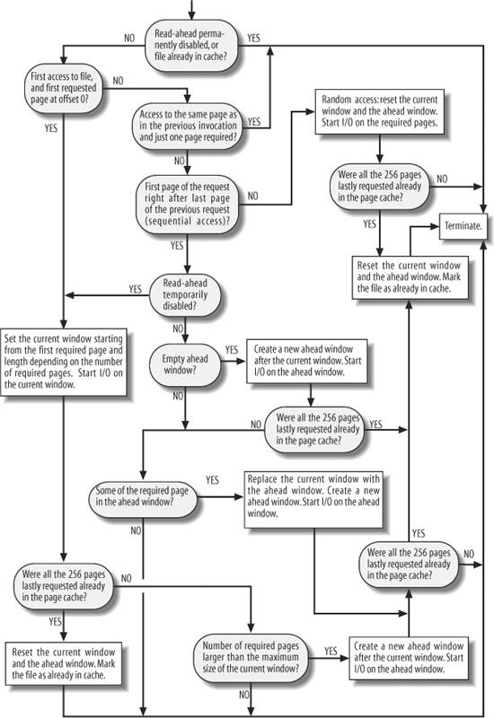

{% include JB/setup %}
{% raw %}
<div>


<a name="understandlk-CHP-16-SECT-1"></a>
<h3 class="docSection1Title">16.1. Reading and Writing a File</h3><a name="IDX-CHP-16-3897"></a>
<a name="IDX-CHP-16-3898"></a>
<a name="IDX-CHP-16-3899"></a>
<a name="IDX-CHP-16-3900"></a>
<p class="docText1">The section "<a class="pcalibre5 docLink pcalibre1" href="understandlk-CHP-12-SECT-6.html#understandlk-CHP-12-SECT-6.2">The read( ) and write( ) System Calls</a>" in <a class="pcalibre5 docLink pcalibre1" href="understandlk-CHP-12.html#understandlk-CHP-12">Chapter 12</a> described how the <tt class="calibre25">read( )</tt> and <tt class="calibre25">write( )</tt> system calls are implemented. The corresponding service routines end up invoking the file object's <tt class="calibre25">read</tt> and <tt class="calibre25">write</tt> methods, which may be filesystem-dependent. For disk-based filesystems, these methods locate the physical blocks that contain the data being accessed and activate the block device driver to start the data transfer.</p>
<p class="docText1">Reading a file is page-based: the kernel always transfers whole pages of data at once. If a process issues a <tt class="calibre25">read( )</tt> system call to get a few bytes, and that data is not already in RAM, the kernel allocates a new page frame, fills the page with the suitable portion of the file, adds the page to the page cache, and finally copies the requested bytes into the process address space. For most filesystems, reading a page of data from a file is just a matter of finding what blocks on disk contain the requested data. Once this is done, the kernel fills the pages by submitting the proper I/O operations to the generic block layer. In practice, the <tt class="calibre25">read</tt> method of all disk-based filesystems is implemented by a common function named <tt class="calibre25">generic_file_read( )</tt>.</p>
<p class="docText1">Write operations on disk-based files are slightly more complicated to handle, because the file size could increase, and therefore the kernel might allocate some physical blocks on the disk. Of course, how this is precisely done depends on the filesystem type. However, many disk-based filesystems implement their <tt class="calibre25">write</tt> methods by means of a common function named <tt class="calibre25">generic_file_write( )</tt>. Examples of such filesystems are Ext2, System V<a name="IDX-CHP-16-3901"></a> 
/Coherent<a name="IDX-CHP-16-3902"></a> 
/Xenix<a name="IDX-CHP-16-3903"></a> 
, and MINIX<a name="IDX-CHP-16-3904"></a> 
. On the other hand, several other filesystems, such as journaling and network filesystems<a name="IDX-CHP-16-3905"></a> 
, implement the <tt class="calibre25">write</tt> method by means of custom functions.</p>
<a name="understandlk-CHP-16-SECT-1.1"></a>
<h4 class="docSection2Title">16.1.1. Reading from a File</h4><a name="IDX-CHP-16-3906"></a>
<a name="IDX-CHP-16-3907"></a>
<a name="IDX-CHP-16-3908"></a>
<a name="IDX-CHP-16-3909"></a>
<a name="IDX-CHP-16-3910"></a>
<a name="IDX-CHP-16-3911"></a>
<a name="IDX-CHP-16-3912"></a>
<a name="IDX-CHP-16-3913"></a>
<a name="IDX-CHP-16-3914"></a>
<a name="IDX-CHP-16-3915"></a>
<a name="IDX-CHP-16-3916"></a>
<a name="IDX-CHP-16-3917"></a>
<a name="IDX-CHP-16-3918"></a>
<p class="docText1">The <tt class="calibre25">generic_file_read( )</tt> function is used to implement the <tt class="calibre25">read</tt> method for block device files and for regular files of almost all disk-based filesystems. This function acts on the following parameters:</p>
<dl class="docText1"><dt class="calibre7"><br class="calibre7"/><p class="calibre14"><span class="docPubcolor"><span class="docPubcolor"><span class="docMonofont">filp</span></span></span></p></dt>
<dd class="calibre20"><p class="docList">Address of the file object</p></dd><dt class="calibre7"><br class="calibre7"/><p class="calibre14"><span class="docPubcolor"><span class="docPubcolor"><span class="docMonofont">buf</span></span></span></p></dt>
<dd class="calibre20"><p class="docList">Linear address of the User Mode memory area where the characters read from the file must be stored</p></dd><dt class="calibre7"><br class="calibre7"/><p class="calibre14"><span class="docPubcolor"><span class="docPubcolor"><span class="docMonofont">count</span></span></span></p></dt>
<dd class="calibre20"><p class="docList">Number of characters to be read</p></dd><dt class="calibre7"><br class="calibre7"/><p class="calibre14"><span class="docPubcolor"><span class="docPubcolor"><span class="docMonofont">ppos</span></span></span></p></dt>
<dd class="calibre20"><p class="docList">Pointer to a variable that stores the offset from which reading must start (usually the <tt class="calibre25">f_pos</tt> field of the <tt class="calibre25">filp</tt> file object)</p></dd></dl>
<p class="docText1">As a first step, the function initializes two descriptors. The first descriptor is stored in the local variable <tt class="calibre25">local_iov</tt> of type <tt class="calibre25">iovec</tt>; it contains the address (<tt class="calibre25">buf</tt>) and the length (<tt class="calibre25">count</tt>) of the User Mode buffer that shall receive the data read from the file. The second descriptor is stored in the local variable <tt class="calibre25">kiocb</tt> of type <tt class="calibre25">kiocb</tt>; it is used to keep track of the completion status of an ongoing synchronous or asynchronous I/O operation. The main fields of the <tt class="calibre25">kiocb</tt> descriptor are shown in <a class="pcalibre5 docLink pcalibre1" href="#understandlk-CHP-16-TABLE-1">Table 16-1</a>.</p>
<a name="understandlk-CHP-16-TABLE-1"></a><p class="calibre14"><table cellspacing="0" frame="hsides" rules="all" cellpadding="4" width="100%" class="calibre15"><caption class="calibre33"><h5 class="docFigureTitle">Table 16-1. The main fields of the kiocb descriptor</h5></caption><colgroup class="calibre16"><col class="calibre17"/><col class="calibre17"/><col class="calibre17"/></colgroup><thead class="calibre18"><tr class="calibre34"><th class="thead" scope="col"><p class="docText1"><span class="calibre5">Type</span></p></th><th class="thead" scope="col"><p class="docText1"><span class="calibre5">Field</span></p></th><th class="thead" scope="col"><p class="docText1"><span class="calibre5">Description</span></p></th></tr></thead><tr class="calibre2"><td class="docTableCell"><p class="docText2"><tt class="calibre25">struct list_head</tt></p></td><td class="docTableCell"><p class="docText2"><tt class="calibre25">ki_run_list</tt></p></td><td class="docTableCell"><p class="docText2">Pointers for the list of I/O operations to be retried later</p></td></tr><tr class="calibre2"><td class="docTableCell"><p class="docText2"><tt class="calibre25">long</tt></p></td><td class="docTableCell"><p class="docText2"><tt class="calibre25">ki_flags</tt></p></td><td class="docTableCell"><p class="docText2">Flags of the <tt class="calibre25">kiocb</tt> descriptor</p></td></tr><tr class="calibre2"><td class="docTableCell"><p class="docText2"><tt class="calibre25">int</tt></p></td><td class="docTableCell"><p class="docText2"><tt class="calibre25">ki_users</tt></p></td><td class="docTableCell"><p class="docText2">Usage counter of the <tt class="calibre25">kiocb</tt> descriptor</p></td></tr><tr class="calibre2"><td class="docTableCell"><p class="docText2"><tt class="calibre25">unsigned int</tt></p></td><td class="docTableCell"><p class="docText2"><tt class="calibre25">ki_key</tt></p></td><td class="docTableCell"><p class="docText2">Identifier of the asynchronous I/O operation, or <tt class="calibre25">KIOCB_SYNC_KEY</tt> (<tt class="calibre25">0xffffffff</tt>) for synchronous I/O operations</p></td></tr><tr class="calibre2"><td class="docTableCell"><p class="docText2">struct file *</p></td><td class="docTableCell"><p class="docText2">ki_filp</p></td><td class="docTableCell"><p class="docText2">Pointer to the file object associated with the ongoing I/O operation</p></td></tr><tr class="calibre2"><td class="docTableCell"><p class="docText2">struct kioctx *</p></td><td class="docTableCell"><p class="docText2">ki_ctx</p></td><td class="docTableCell"><p class="docText2">Pointer to the asynchronous I/O context descriptor for this operation (see the section "<a class="pcalibre5 docLink pcalibre1" href="understandlk-CHP-16-SECT-4.html#understandlk-CHP-16-SECT-4">Asynchronous I/O</a>" later in this chapter)</p></td></tr><tr class="calibre2"><td class="docTableCell"><p class="docText2">int <tt class="calibre25">(*)</tt></p><p class="docText2"><tt class="calibre25">(struct kiocb *,</tt></p><p class="docText2"><tt class="calibre25">struct io_event *)</tt></p></td><td class="docTableCell"><p class="docText2">ki_cancel</p></td><td class="docTableCell"><p class="docText2">Method invoked when canceling an asynchronous I/O operation</p></td></tr><tr class="calibre2"><td class="docTableCell"><p class="docText2">ssize_t <tt class="calibre25">(*)</tt></p><p class="docText2"><tt class="calibre25">(struct kiocb *)</tt></p></td><td class="docTableCell"><p class="docText2">ki_retry</p></td><td class="docTableCell"><p class="docText2">Method invoked when retrying an asynchronous I/O operation</p></td></tr><tr class="calibre2"><td class="docTableCell"><p class="docText2">void <tt class="calibre25">(*)</tt></p><p class="docText2"><tt class="calibre25">(struct kiocb *)</tt></p></td><td class="docTableCell"><p class="docText2">ki_dtor</p></td><td class="docTableCell"><p class="docText2">Method invoked when destroying the <tt class="calibre25">kiocb</tt> descriptor</p></td></tr><tr class="calibre2"><td class="docTableCell"><p class="docText2">struct list_head</p></td><td class="docTableCell"><p class="docText2">ki_list</p></td><td class="docTableCell"><p class="docText2">Pointers for the list of active ongoing I/O operation on an asynchronous I/O context</p></td></tr><tr class="calibre2"><td class="docTableCell"><p class="docText2">union</p></td><td class="docTableCell"><p class="docText2">ki_obj</p></td><td class="docTableCell"><p class="docText2">For synchronous operations, pointer to the process descriptor that issued the I/O operation; for asynchronous operations, pointer to the <tt class="calibre25">iocb</tt> User Mode data structure</p></td></tr><tr class="calibre2"><td class="docTableCell"><p class="docText2"><tt class="calibre25">_ _</tt> u64</p></td><td class="docTableCell"><p class="docText2">ki_user_data</p></td><td class="docTableCell"><p class="docText2">Value to be returned to the User Mode process</p></td></tr><tr class="calibre2"><td class="docTableCell"><p class="docText2">loff_t</p></td><td class="docTableCell"><p class="docText2">ki_pos</p></td><td class="docTableCell"><p class="docText2">Current file position of the ongoing I/O operation</p></td></tr><tr class="calibre2"><td class="docTableCell"><p class="docText2">unsigned short</p></td><td class="docTableCell"><p class="docText2">ki_opcode</p></td><td class="docTableCell"><p class="docText2">Type of operation (read, write, or sync)</p></td></tr><tr class="calibre2"><td class="docTableCell"><p class="docText2">size_t</p></td><td class="docTableCell"><p class="docText2">ki_nbytes</p></td><td class="docTableCell"><p class="docText2">Number of bytes to be transferred</p></td></tr><tr class="calibre2"><td class="docTableCell"><p class="docText2">char *</p></td><td class="docTableCell"><p class="docText2">ki_buf</p></td><td class="docTableCell"><p class="docText2">Current position in the User Mode buffer</p></td></tr><tr class="calibre2"><td class="docTableCell"><p class="docText2">size_t</p></td><td class="docTableCell"><p class="docText2">ki_left</p></td><td class="docTableCell"><p class="docText2">Number of bytes yet to be transferred</p></td></tr><tr class="calibre2"><td class="docTableCell"><p class="docText2">wait_queue_t</p></td><td class="docTableCell"><p class="docText2">ki_wait</p></td><td class="docTableCell"><p class="docText2">Wait queue used for asynchronous I/O operations</p></td></tr><tr class="calibre2"><td class="docTableCell"><p class="docText2">void *</p></td><td class="docTableCell"><p class="docText2">private</p></td><td class="docTableCell"><p class="docText2">Freely usable by the filesystem layer</p></td></tr></table></p><br class="calibre7"/>
<p class="docText1">The <tt class="calibre25">generic_file_read( )</tt> function initializes the <tt class="calibre25">kiocb</tt> descriptor by executing the <tt class="calibre25">init_sync_kiocb</tt> macro, which sets the fields of the object for a synchronous operation. In particular, the macro sets the <tt class="calibre25">ki_key</tt> field to <tt class="calibre25">KIOCB_SYNC_KEY</tt>, the <tt class="calibre25">ki_filp</tt> field to <tt class="calibre25">filp</tt>, and the <tt class="calibre25">ki_obj</tt> field to <tt class="calibre25">current</tt>.</p>
<p class="docText1">Then, <tt class="calibre25">generic_file_read( )</tt> invokes <tt class="calibre25">_ _generic_file_aio_read( )</tt> passing to it the addresses of the <tt class="calibre25">iovec</tt> and <tt class="calibre25">kiocb</tt> descriptors just filled. The latter function returns a value, which is usually the number of bytes effectively read from the file; <tt class="calibre25">generic_file_read( )</tt> terminates by returning this value.</p>
<p class="docText1">The <tt class="calibre25">_ _generic_file_aio_read( )</tt> function is a general-purpose routine used by all filesystems to implement both synchronous and asynchronous read operations. The function receives four parameters: the address <tt class="calibre25">iocb</tt> of a <tt class="calibre25">kiocb</tt> descriptor, the address <tt class="calibre25">iov</tt> of an array of <tt class="calibre25">iovec</tt> descriptors, the length of this array, and the address <tt class="calibre25">ppos</tt> of a variable that stores the file's current pointer. When invoked by <tt class="calibre25">generic_file_read( )</tt>, the array of <tt class="calibre25">iovec</tt> descriptors is composed of just one element describing the User Mode buffer that will receive the data.<sup class="docFootnote"><a class="pcalibre5 docLink pcalibre1" href="#understandlk-CHP-16-FN1">[*]</a></sup></p><blockquote class="calibre22"><p class="docFootnote1"><sup class="calibre24"><a name="understandlk-CHP-16-FN1">[*]</a></sup> A variant of the <tt class="calibre42">read( )</tt> system callnamed <tt class="calibre42">readv( )</tt><a name="IDX-CHP-16-3919"></a> 
allows an application to define multiple User Mode buffers in which the kernel scatters the data read from the file; the <tt class="calibre42">_ _generic_file_aio_read( )</tt> function handles this case, too. In the following, we will assume that the data read from the file will be copied into just one User Mode buffer; however, guessing the additional steps to be performed when using multiple buffers is straightforward.</p></blockquote>
<p class="docText1">We now explain the actions of the <tt class="calibre25">_ _generic_file_aio_read( )</tt> function; for the sake of simplicity, we restrict the description to the most common case: a synchronous operation raised by a <tt class="calibre25">read( )</tt> system call on a page-cached file. Later in this chapter we describe how this function behaves in other cases. As usual, we do not discuss how errors and anomalous conditions are handled.</p>
<p class="docText1">Here are the steps performed by the function:</p>
<div class="calibre44"><ol class="docList1" type="1"><li class="calibre12"><div class="calibre45"><p class="docList">Invokes <tt class="calibre25">access_ok( )</tt> to verify that the User Mode buffer described by the <tt class="calibre25">iovec</tt> descriptor is valid. Because the starting address and length have been received from the <tt class="calibre25">sys_read( )</tt> service routine, they must be checked before using them (see the section "<a class="pcalibre5 docLink pcalibre1" href="understandlk-CHP-10-SECT-4.html#understandlk-CHP-10-SECT-4.1">Verifying the Parameters</a>" in <a class="pcalibre5 docLink pcalibre1" href="understandlk-CHP-10.html#understandlk-CHP-10">Chapter 10</a>). If the parameters are not valid, returns the <tt class="calibre25">-EFAULT</tt> error code.</p></div></li><li class="calibre12"><div class="calibre45"><p class="docList">Sets up a <span class="docEmphasis">read operation descriptor</span>  namely, a data structure of type <tt class="calibre25">read_descriptor_t</tt> that stores the current status of the ongoing file read operation relative to a single User Mode buffer. The fields of this descriptor are shown in <a class="pcalibre5 docLink pcalibre1" href="#understandlk-CHP-16-TABLE-2">Table 16-2</a>.</p></div></li><li class="calibre12"><div class="calibre45"><p class="docList">Invokes <tt class="calibre25">do_generic_file_read( )</tt>, passing to it the file object pointer <tt class="calibre25">filp</tt>, the pointer to the file offset <tt class="calibre25">ppos</tt>, the address of the just allocated read operation descriptor, and the address of the <tt class="calibre25">file_read_actor( )</tt> function (see later).</p></div></li><li class="calibre12"><div class="calibre45"><p class="docList">Returns the number of bytes copied into the User Mode buffer; that is, the value found in the <tt class="calibre25">written</tt> field of the <tt class="calibre25">read_descriptor_t</tt> data structure.</p></div></li></ol></div>
<a name="understandlk-CHP-16-TABLE-2"></a><p class="calibre14"><table cellspacing="0" frame="hsides" rules="all" cellpadding="4" width="100%" class="calibre15"><caption class="calibre33"><h5 class="docFigureTitle">Table 16-2. The fields of the read operation descriptor</h5></caption><colgroup class="calibre16"><col class="calibre17"/><col class="calibre17"/><col class="calibre17"/></colgroup><thead class="calibre18"><tr class="calibre34"><th class="thead" scope="col"><p class="docText1"><span class="calibre5">Type</span></p></th><th class="thead" scope="col"><p class="docText1"><span class="calibre5">Field</span></p></th><th class="thead" scope="col"><p class="docText1"><span class="calibre5">Description</span></p></th></tr></thead><tr class="calibre2"><td class="docTableCell"><p class="docText2"><tt class="calibre25">size_t</tt></p></td><td class="docTableCell"><p class="docText2"><tt class="calibre25">written</tt></p></td><td class="docTableCell"><p class="docText2">How many bytes have been copied into the User Mode buffer</p></td></tr><tr class="calibre2"><td class="docTableCell"><p class="docText2"><tt class="calibre25">size_t</tt></p></td><td class="docTableCell"><p class="docText2"><tt class="calibre25">count</tt></p></td><td class="docTableCell"><p class="docText2">How many bytes are yet to be transferred</p></td></tr><tr class="calibre2"><td class="docTableCell"><p class="docText2"><tt class="calibre25">char *</tt></p></td><td class="docTableCell"><p class="docText2"><tt class="calibre25">arg.buf</tt></p></td><td class="docTableCell"><p class="docText2">Current position in the User Mode buffer</p></td></tr><tr class="calibre2"><td class="docTableCell"><p class="docText2"><tt class="calibre25">int</tt></p></td><td class="docTableCell"><p class="docText2"><tt class="calibre25">error</tt></p></td><td class="docTableCell"><p class="docText2">Error code of the read operation (0 for no error)</p></td></tr></table></p><br class="calibre7"/>
<p class="docText1">The <tt class="calibre25">do_generic_file_read( )</tt> function reads the requested pages from disk and copies them into the User Mode buffer. In particular, the function performs the following actions:</p>
<div class="calibre44"><ol class="docList1" type="1"><li class="calibre12"><div class="calibre45"><p class="docList">Gets the <tt class="calibre25">address_space</tt> object corresponding to the file being read; its address is stored in <tt class="calibre25">filp-&gt;f_mapping</tt>.</p></div></li><li class="calibre12"><div class="calibre45"><p class="docList">Gets the owner of the <tt class="calibre25">address_space</tt> object, that is, the inode object that will own the pages to be filled with file's data; its address is stored in the <tt class="calibre25">host</tt> field of the <tt class="calibre25">address_space</tt> object. If the file being read is a block device file, the owner is an inode in the <span class="docEmphasis">bdev</span><a name="IDX-CHP-16-3920"></a> 
 special filesystem rather than the inode pointed to by <tt class="calibre25">filp-&gt;f_dentry-&gt;d_inode</tt> (see "<a class="pcalibre5 docLink pcalibre1" href="understandlk-CHP-15-SECT-1.html#understandlk-CHP-15-SECT-1.1">The address_space Object</a>" in <a class="pcalibre5 docLink pcalibre1" href="understandlk-CHP-15.html#understandlk-CHP-15">Chapter 15</a>).</p></div></li><li class="calibre12"><div class="calibre45"><p class="docList">Considers the file as subdivided in pages of data (4,096 bytes per page). The function derives from the file pointer <tt class="calibre25">*ppos</tt> the logical number of the page that includes the first requested bytethat is, the page's index in the address spaceand stores it in the <tt class="calibre25">index</tt> local variable. The function also stores in the <tt class="calibre25">offset</tt> local variable the displacement inside the page of the first requested byte.</p></div></li><li class="calibre12"><div class="calibre45"><p class="docList">Starts a cycle to read all pages that include the requested bytes; the number of bytes to be read is stored in the <tt class="calibre25">count</tt> field of the <tt class="calibre25">read_descriptor_t</tt> descriptor. During a single iteration, the function transfers a page of data by performing the following substeps:</p><div class="calibre44"><ol class="docList4" type="a"><li class="calibre12"><div class="calibre45"><p class="docList">If <tt class="calibre25">index*4096+offset</tt> exceeds the file size stored in the <tt class="calibre25">i_size</tt> field of the inode object, it exits from the cycle and goes to step 5.</p></div></li><li class="calibre12"><div class="calibre45"><p class="docList">Invokes <tt class="calibre25">cond_resched( )</tt> to check the <tt class="calibre25">TIF_NEED_RESCHED</tt> flag of the current process and, if the flag is set, to invoke the <tt class="calibre25">schedule( )</tt> function.</p></div></li><li class="calibre12"><div class="calibre45"><p class="docList">If additional pages must be read in advance, it invokes <tt class="calibre25">page_cache_readahead( )</tt> to read them. We defer discussing read-ahead until the later section "<a class="pcalibre5 docLink pcalibre1" href="#understandlk-CHP-16-SECT-1.2">Read-Ahead of Files</a>."</p></div></li><li class="calibre12"><div class="calibre45"><p class="docList">Invokes <tt class="calibre25">find_get_page( )</tt> passing as parameters a pointer to the <tt class="calibre25">address_space</tt> object and the value of <tt class="calibre25">index</tt>; the function looks up the page cache to find the descriptor of the page that stores the requested data, if any.</p></div></li><li class="calibre12"><div class="calibre45"><p class="docList">If <tt class="calibre25">find_get_page( )</tt> returned a <tt class="calibre25">NULL</tt> pointer, the page requested is not in the page cache. In that case, it performs the following actions:</p><div class="calibre44"><ol class="docList4" type="1"><li class="calibre12"><div class="calibre45"><p class="docList">Invokes <tt class="calibre25">handle_ra_miss( )</tt> to tune the parameters used by the read-ahead system.</p></div></li><li class="calibre12"><div class="calibre45"><p class="docList">Allocates a new page.</p></div></li><li class="calibre12"><div class="calibre45"><p class="docList">Inserts the descriptor of the new page into the page cache by invoking <tt class="calibre25">add_to_page_cache( )</tt>. Remember that this function sets the <tt class="calibre25">PG_locked</tt> flag of the new page.</p></div></li><li class="calibre12"><div class="calibre45"><p class="docList">Inserts the descriptor of the new page into the LRU list by invoking <tt class="calibre25">lru_cache_add( )</tt> (see <a class="pcalibre5 docLink pcalibre1" href="understandlk-CHP-17.html#understandlk-CHP-17">Chapter 17</a>).</p></div></li><li class="calibre12"><div class="calibre45"><p class="docList">Jumps to step 4j to start reading the file's data.</p></div></li></ol></div></div></li><li class="calibre12"><div class="calibre45"><p class="docList">If the function has reached this point, the page is in the page cache. Checks the <tt class="calibre25">PG_uptodate</tt> flag; if it is set, the data stored in the page is up-to-date, hence there is no need to read it from disk: jumps to step 4m.</p></div></li><li class="calibre12"><div class="calibre45"><p class="docList">The data on the page is not valid, so it must be read from disk. The function gains exclusive access to the page by invoking the <tt class="calibre25">lock_page( )</tt> function. As described in the section "<a class="pcalibre5 docLink pcalibre1" href="understandlk-CHP-15-SECT-1.html#understandlk-CHP-15-SECT-1.3">Page Cache Handling Functions</a>" in <a class="pcalibre5 docLink pcalibre1" href="understandlk-CHP-15.html#understandlk-CHP-15">Chapter 15</a>, <tt class="calibre25">lock_page( )</tt> suspends the current process if the <tt class="calibre25">PG_locked</tt> flag is already set, until that bit is cleared.</p></div></li><li class="calibre12"><div class="calibre45"><p class="docList">Now the page is locked by the current process. However, another process might have removed the page from the page cache right before the previous step; hence, it checks whether the <tt class="calibre25">mapping</tt> field of the page descriptor is <tt class="calibre25">NULL</tt>; in this case, it unlocks the page by invoking <tt class="calibre25">unlock_page( )</tt>, decreases its usage counter (it was increased by <tt class="calibre25">find_get_page( )</tt>), and jumps back to step 4a starting over with the same page.</p></div></li><li class="calibre12"><div class="calibre45"><p class="docList">If the function has reached this point, the page is locked and still present in the page cache. Checks the <tt class="calibre25">PG_uptodate</tt> flag again, because another kernel control path could have completed the necessary read between steps 4f and 4g. If the flag is set, it invokes <tt class="calibre25">unlock_page( )</tt> and jumps to step 4m to skip the read operation.</p></div></li><li class="calibre12"><div class="calibre45"><p class="docList">Now the actual I/O operation can be started. Invokes the <tt class="calibre25">readpage</tt> method of the <tt class="calibre25">address_space</tt> object of the file. The corresponding function takes care of activating the I/O data transfer from the disk to the page. We discuss later what this function does for regular files and block device files.</p></div></li><li class="calibre12"><div class="calibre45"><p class="docList">If the <tt class="calibre25">PG_uptodate</tt> flag is still cleared, it waits until the page has been effectively read by invoking the <tt class="calibre25">lock_page( )</tt> function. The page, which was locked in step 4g, will be unlocked as soon as the read operation finishes. Therefore, the current process sleeps until the I/O data transfer terminates.</p></div></li><li class="calibre12"><div class="calibre45"><p class="docList">If <tt class="calibre25">index</tt> exceeds the file size in pages (this number is obtained by dividing the value of the <tt class="calibre25">i_size</tt> field of the inode object by 4,096), it decreases the page's usage counter, and exits from the cycle jumping to step 5. This case occurs when the file being read is concurrently truncated by another process.</p></div></li><li class="calibre12"><div class="calibre45"><p class="docList">Stores in the <tt class="calibre25">nr</tt> local variable the number of bytes in the page that should be copied into the User Mode buffer. This value is equal to the page size (4,096 bytes) unless either <tt class="calibre25">offset</tt> is not zerothis can happen only for the first or last page of requested dataor the file does not contain all requested bytes.</p></div></li><li class="calibre12"><div class="calibre45"><p class="docList">Invokes <tt class="calibre25">mark_page_accessed( )</tt> to set the <tt class="calibre25">PG_referenced</tt> or the <tt class="calibre25">PG_active</tt> flag, hence denoting the fact that the page is being used and should not be swapped out (see <a class="pcalibre5 docLink pcalibre1" href="understandlk-CHP-17.html#understandlk-CHP-17">Chapter 17</a>). If the same page (or part thereof) is read several times in successive executions of <tt class="calibre25">do_generic_file_read( )</tt>, this step is executed only during the first read.</p></div></li><li class="calibre12"><div class="calibre45"><p class="docList">Now it is time to copy the data on the page into the User Mode buffer. To do this, <tt class="calibre25">do_generic_file_read( )</tt> invokes the <tt class="calibre25">file_read_actor( )</tt> function, whose address has been passed as a parameter. In turn, <tt class="calibre25">file_read_actor( )</tt> essentially executes the following steps:</p><div class="calibre44"><ol class="docList4" type="1"><li class="calibre12"><div class="calibre45"><p class="docList">Invokes <tt class="calibre25">kmap( )</tt>, which establishes a permanent kernel mapping for the page if it is in high memory (see the section "<a class="pcalibre5 docLink pcalibre1" href="understandlk-CHP-8-SECT-1.html#understandlk-CHP-8-SECT-1.6">Kernel Mappings of High-Memory Page Frames</a>" in <a class="pcalibre5 docLink pcalibre1" href="understandlk-CHP-8.html#understandlk-CHP-8">Chapter 8</a>).</p></div></li><li class="calibre12"><div class="calibre45"><p class="docList">Invokes <tt class="calibre25">_ _copy_to_user( )</tt>, which copies the data on the page in the User Mode address space (see the section "<a class="pcalibre5 docLink pcalibre1" href="understandlk-CHP-10-SECT-4.html#understandlk-CHP-10-SECT-4.2">Accessing the Process Address Space</a>" in <a class="pcalibre5 docLink pcalibre1" href="understandlk-CHP-10.html#understandlk-CHP-10">Chapter 10</a>). Notice that this operation might block the process because of page faults while accessing the User Mode address space.</p></div></li><li class="calibre12"><div class="calibre45"><p class="docList">Invokes <tt class="calibre25">kunmap( )</tt> to release any permanent kernel mapping of the page.</p></div></li><li class="calibre12"><div class="calibre45"><p class="docList">Updates the <tt class="calibre25">count</tt>, <tt class="calibre25">written</tt>, and <tt class="calibre25">buf</tt> fields of the <tt class="calibre25">read_descriptor_t</tt> descriptor.</p></div></li></ol></div></div></li><li class="calibre12"><div class="calibre45"><p class="docList">Updates the <tt class="calibre25">index</tt> and <tt class="calibre25">offset</tt> local variables according to the number of bytes effectively transferred in the User Mode buffer. Typically, if the last byte in the page has been copied into the User Mode buffer, <tt class="calibre25">index</tt> is increased by one and <tt class="calibre25">offset</tt> is set to zero; otherwise, <tt class="calibre25">index</tt> is not increased and <tt class="calibre25">offset</tt> is set to the number of bytes in the page that have been copied into the User Mode buffer.</p></div></li><li class="calibre12"><div class="calibre45"><p class="docList">Decreases the page descriptor usage counter.</p></div></li><li class="calibre12"><div class="calibre45"><p class="docList">If the <tt class="calibre25">count</tt> field of the <tt class="calibre25">read_descriptor_t</tt> descriptor is not zero, there is other data to be read from the file: jumps to step 4a to continue the loop with the next page of data in the file.</p></div></li></ol></div></div></li><li class="calibre12"><div class="calibre45"><p class="docList">All requestedor availablebytes have been read. The function updates the <tt class="calibre25">filp-&gt;f_ra</tt> read-ahead data structure to record the fact that data is being read sequentially from the file (see the later section "<a class="pcalibre5 docLink pcalibre1" href="#understandlk-CHP-16-SECT-1.2">Read-Ahead of Files</a>").</p></div></li><li class="calibre12"><div class="calibre45"><p class="docList">Assigns to <tt class="calibre25">*ppos</tt> the value <tt class="calibre25">index*4096+offset</tt>, thus storing the next position where a sequential access is to occur for a future invocation of the <tt class="calibre25">read( )</tt> and <tt class="calibre25">write( )</tt> system calls.</p></div></li><li class="calibre12"><div class="calibre45"><p class="docList">Invokes <tt class="calibre25">update_atime( )</tt> to store the current time in the <tt class="calibre25">i_atime</tt> field of the file's inode and to mark the inode as dirty, and returns.</p></div></li></ol></div>
<a name="understandlk-CHP-16-SECT-1.1.1"></a>
<h5 class="docSection3Title">16.1.1.1. The readpage method for regular files</h5><a name="IDX-CHP-16-3921"></a>
<a name="IDX-CHP-16-3922"></a>
<a name="IDX-CHP-16-3923"></a>
<a name="IDX-CHP-16-3924"></a>
<p class="docText1">As we saw, the <tt class="calibre25">readpage</tt> method is used repeatedly by <tt class="calibre25">do_generic_file_read( )</tt> to read individual pages from disk into memory.</p>
<p class="docText1">The <tt class="calibre25">readpage</tt> method of the <tt class="calibre25">address_space</tt> object stores the address of the function that effectively activates the I/O data transfer from the physical disk to the page cache. For regular files, this field typically points to a wrapper that invokes the <tt class="calibre25">mpage_readpage( )</tt> function. For instance, the <tt class="calibre25">readpage</tt> method of the Ext3 filesystem<a name="IDX-CHP-16-3925"></a> 
 is implemented by the following function:</p>
<pre class="calibre27">
int ext3_readpage(struct file *file, struct page *page)
{
    return mpage_readpage(page, ext3_get_block);
}</pre><br class="calibre7"/>
<p class="docText1">The wrapper is needed because the <tt class="calibre25">mpage_readpage( )</tt> function receives as its parameters the descriptor <tt class="calibre25">page</tt> of the page to be filled and the address <tt class="calibre25">get_block</tt> of a function that helps <tt class="calibre25">mpage_readpage( )</tt> find the right block. The wrapper is filesystem-specific and can therefore supply the proper function to get a block. This function translates the block numbers relative to the beginning of the file into logical block numbers relative to positions of the block in the disk partition (for an example, see <a class="pcalibre5 docLink pcalibre1" href="understandlk-CHP-18.html#understandlk-CHP-18">Chapter 18</a>). Of course, the latter parameter depends on the type of filesystem to which the regular file belongs; in the previous example, the parameter is the address of the <tt class="calibre25">ext3_get_block( )</tt> function. The function passed as <tt class="calibre25">get_block</tt> always uses a buffer head to store precious information about the block device (<tt class="calibre25">b_dev</tt> field), the position of the requested data on the device (<tt class="calibre25">b_blocknr</tt> field), and the block status (<tt class="calibre25">b_state</tt> field).</p>
<p class="docText1">The <tt class="calibre25">mpage_readpage( )</tt> function chooses between two different strategies when reading a page from disk. If the blocks that contain the requested data are contiguously located on disk, then the function submits the read I/O operation to the generic block layer by using a single bio descriptor. In the opposite case, each block in the page is read by using a different bio descriptor. The filesystem-dependent <tt class="calibre25">get_block</tt> function plays the crucial role of determining whether the next block in the file is also the next block on the disk.</p>
<p class="docText1">Specifically, <tt class="calibre25">mpage_readpage( )</tt> performs the following steps:</p>
<div class="calibre44"><ol class="docList1" type="1"><li class="calibre12"><div class="calibre45"><p class="docList">Checks the <tt class="calibre25">PG_private</tt> field of the page descriptor: if it is set, the page is a buffer page, that is, the page is associated with a list of buffer heads describing the blocks that compose the page (see the section "<a class="pcalibre5 docLink pcalibre1" href="understandlk-CHP-15-SECT-2.html#understandlk-CHP-15-SECT-2">Storing Blocks in the Page Cache</a>" in <a class="pcalibre5 docLink pcalibre1" href="understandlk-CHP-15.html#understandlk-CHP-15">Chapter 15</a>). This means that the page has already been read from disk in the past, and that the blocks in the page are not adjacent on disk: jumps to step 11 to read the page one block at a time.</p></div></li><li class="calibre12"><div class="calibre45"><p class="docList">Retrieves the block size (stored in the <tt class="calibre25">page-&gt;mapping-&gt;host-&gt;i_blkbits</tt> inode field), and computes two values required to access all blocks on that page: the number of blocks stored in the page and the file block number of the first block in the pagethat is, the index of the first block in the page relative to the beginning of the file.</p></div></li><li class="calibre12"><div class="calibre45"><p class="docList">For each block in the page, invokes the filesystem-dependent <tt class="calibre25">get_block</tt> function passed as a parameter to get the logical block number, that is, the index of the block relative to the beginning of the disk or partition. The logical block numbers of all blocks in the page are stored in a local array.</p></div></li><li class="calibre12"><div class="calibre45"><p class="docList">Checks for any anomalous condition that could occur while executing the previous step. In particular, if some blocks are not adjacent on disk, or some block falls inside a "file hole" (see the section "<a class="pcalibre5 docLink pcalibre1" href="understandlk-CHP-18-SECT-6.html#understandlk-CHP-18-SECT-6.4">File Holes</a>" in <a class="pcalibre5 docLink pcalibre1" href="understandlk-CHP-18.html#understandlk-CHP-18">Chapter 18</a>), or a block buffer has been already filled by the <tt class="calibre25">get_block</tt> function, then jumps to step 11 to read the page one block at a time.</p></div></li><li class="calibre12"><div class="calibre45"><p class="docList">If the function has reached this point, all blocks on the page are adjacent on disk. However, the page could be the last page of data in the file, hence some of the blocks in the page might not have an image on disk. If so, it fills the corresponding block buffers in the page with zeros; otherwise, it sets the <tt class="calibre25">PG_mappedtodisk</tt> flag of the page descriptor.</p></div></li><li class="calibre12"><div class="calibre45"><p class="docList">Invokes <tt class="calibre25">bio_alloc( )</tt> to allocate a new bio descriptor consisting of a single segment and to initialize its <tt class="calibre25">bi_bdev</tt> and <tt class="calibre25">bi_sector</tt> fields with the address of the block device descriptor and the logical block number of the first block in the page, respectively. Both pieces of information have been determined in step 3 above.</p></div></li><li class="calibre12"><div class="calibre45"><p class="docList">Sets the <tt class="calibre25">bio_vec</tt> descriptor of the bio's segment with the initial address of the page, the offset of the first byte to be read (zero), and the total number of bytes to be read.</p></div></li><li class="calibre12"><div class="calibre45"><p class="docList">Stores the address of the <tt class="calibre25">mpage_end_io_read( )</tt> function in the <tt class="calibre25">bio-&gt;bi_end_io</tt> field (see below).</p></div></li><li class="calibre12"><div class="calibre45"><p class="docList">Invokes <tt class="calibre25">submit_bio( )</tt>, which sets the <tt class="calibre25">bi_rw</tt> flag with the direction of the data transfer, updates the <tt class="calibre25">page_states</tt> per-CPU variable to keep track of the number of read sectors, and invokes the <tt class="calibre25">generic_make_request( )</tt> function on the bio descriptor (see the section "<a class="pcalibre5 docLink pcalibre1" href="understandlk-CHP-14-SECT-3.html#understandlk-CHP-14-SECT-3.5">Issuing a Request to the I/O Scheduler</a>" in <a class="pcalibre5 docLink pcalibre1" href="understandlk-CHP-14.html#understandlk-CHP-14">Chapter 14</a>).</p></div></li><li class="calibre12"><div class="calibre45"><p class="docList">Returns the value zero (success).</p></div></li><li class="calibre12"><div class="calibre45"><p class="docList">If the function jumps here, the page contains blocks that are not adjacent on disk. If the page is up-to-date (<tt class="calibre25">PG_uptodate</tt> flag set), the function invokes <tt class="calibre25">unlock_page( )</tt> to unlock the page; otherwise, it invokes <tt class="calibre25">block_read_full_page( )</tt> to start reading the page one block at a time (see below).</p></div></li><li class="calibre12"><div class="calibre45"><p class="docList">Returns the value zero (success).</p></div></li></ol></div>
<p class="docText1">The <tt class="calibre25">mpage_end_io_read( )</tt> function is the completion method of the bio; it is executed as soon as the I/O data transfer terminates. Assuming that there was no I/O error, the function essentially sets the <tt class="calibre25">PG_uptodate</tt> flag of the page descriptor, invokes <tt class="calibre25">unlock_page( )</tt> to unlock the page and to wake up any process sleeping for this event, and invokes <tt class="calibre25">bio_put( )</tt> to destroy the bio descriptor.</p>
<a name="understandlk-CHP-16-SECT-1.1.2"></a>
<h5 class="docSection3Title">16.1.1.2. The readpage method for block device files</h5><a name="IDX-CHP-16-3926"></a>
<a name="IDX-CHP-16-3927"></a>
<a name="IDX-CHP-16-3928"></a>
<a name="IDX-CHP-16-3929"></a>
<a name="IDX-CHP-16-3930"></a>
<a name="IDX-CHP-16-3931"></a>
<p class="docText1">In the sections "<a class="pcalibre5 docLink pcalibre1" href="understandlk-CHP-13-SECT-3.html#understandlk-CHP-13-SECT-3.2">VFS Handling of Device Files</a>" in <a class="pcalibre5 docLink pcalibre1" href="understandlk-CHP-13.html#understandlk-CHP-13">Chapter 13</a> and "Opening a Block Device File" in <a class="pcalibre5 docLink pcalibre1" href="understandlk-CHP-14.html#understandlk-CHP-14">Chapter 14</a>, we discussed how the kernel handles requests to open a block device file. We saw how the <tt class="calibre25">init_special_inode( )</tt> function sets up the device inode and how the <tt class="calibre25">blkdev_open( )</tt> function completes the opening phase.</p>
<p class="docText1">Block devices use an <tt class="calibre25">address_space</tt> object that is stored in the <tt class="calibre25">i_data</tt> field of the corresponding block device inode in the <span class="docEmphasis">bdev</span><a name="IDX-CHP-16-3932"></a> 
 special filesystem. Unlike regular files  whose <tt class="calibre25">readpage</tt> method in the <tt class="calibre25">address_space</tt> object depends on the filesystem type to which the file belongs  the <tt class="calibre25">readpage</tt> method of block device files is always the same. It is implemented by the <tt class="calibre25">blkdev_readpage( )</tt> function, which calls <tt class="calibre25">block_read_full_page( )</tt>:</p>
<pre class="calibre27">
int blkdev_readpage(struct file * file, struct * page page)
{
    return block_read_full_page(page, blkdev_get_block);
}</pre><br class="calibre7"/>
<p class="docText1">As you can see, the function is once again a wrapper, this time for the <tt class="calibre25">block_read_full_page( )</tt> function. This time the second parameter points to a function that translates the file block number relative to the beginning of the file into a logical block number relative to the beginning of the block device. For block device files, however, the two numbers coincide; therefore, the <tt class="calibre25">blkdev_get_block( )</tt> function performs the following steps:</p>
<div class="calibre44"><ol class="docList1" type="1"><li class="calibre12"><div class="calibre45"><p class="docList">Checks whether the number of the first block in the page exceeds the index of the last block in the block device (this index is obtained by dividing the size of the block device stored in <tt class="calibre25">bdev-&gt;bd_inode-&gt;i_size</tt> by the block size stored in <tt class="calibre25">bdev-&gt;bd_block_size</tt>; <tt class="calibre25">bdev</tt> points to the descriptor of the block device). If so, it returns <tt class="calibre25">-EIO</tt> for a write operation, or zero for a read operation. (Reading beyond the end of a block device is not allowed, either, but the error code should not be returned here: the kernel could just be trying to dispatch a read request for the last data of a block device, and the corresponding buffer page is only partially mapped.)</p></div></li><li class="calibre12"><div class="calibre45"><p class="docList">Sets the <tt class="calibre25">b_dev</tt> field of the buffer head to <tt class="calibre25">bdev</tt>.</p></div></li><li class="calibre12"><div class="calibre45"><p class="docList">Sets the <tt class="calibre25">b_blocknr</tt> field of the buffer head to the file block number, which was passed as a parameter of the function.</p></div></li><li class="calibre12"><div class="calibre45"><p class="docList">Sets the <tt class="calibre25">BH_Mapped</tt> flag of the buffer head to state that the <tt class="calibre25">b_dev</tt> and <tt class="calibre25">b_blocknr</tt> fields of the buffer head are significant.</p></div></li></ol></div>
<p class="docText1">The <tt class="calibre25">block_read_full_page( )</tt> function reads a page of data one block at a time. As we have seen, it is used both when reading block device files and when reading pages of regular files whose blocks are not adjacent on disk. It performs the following steps:</p>
<div class="calibre44"><ol class="docList1" type="1"><li class="calibre12"><div class="calibre45"><p class="docList">Checks the <tt class="calibre25">PG_private</tt> flag of the page descriptor; if it is set, the page is associated with a list of buffer heads describing the blocks that compose the page (see the section "<a class="pcalibre5 docLink pcalibre1" href="understandlk-CHP-15-SECT-2.html#understandlk-CHP-15-SECT-2">Storing Blocks in the Page Cache</a>" in <a class="pcalibre5 docLink pcalibre1" href="understandlk-CHP-15.html#understandlk-CHP-15">Chapter 15</a>). Otherwise, the function invokes <tt class="calibre25">create_empty_buffers( )</tt> to allocate buffer heads for all block buffers included in the page. The address of the buffer head for the first buffer in the page is stored in the <tt class="calibre25">page-&gt;private</tt> field. The <tt class="calibre25">b_this_page</tt> field of each buffer head points to the buffer head of the next buffer in the page.</p></div></li><li class="calibre12"><div class="calibre45"><p class="docList">Derives from the file offset relative to the page (<tt class="calibre25">page-&gt;index</tt> field) the file block number of the first block in the page.</p></div></li><li class="calibre12"><div class="calibre45"><p class="docList">For each buffer head of the buffers in the page, it performs the following substeps:</p><div class="calibre44"><ol class="docList4" type="a"><li class="calibre12"><div class="calibre45"><p class="docList">If the <tt class="calibre25">BH_Uptodate</tt> flag is set, it skips the buffer and continues with the next buffer in the page.</p></div></li><li class="calibre12"><div class="calibre45"><p class="docList">If the <tt class="calibre25">BH_Mapped</tt> flag is not set and the block is not beyond the end of the file, it invokes the filesystem-dependent <tt class="calibre25">get_block</tt> function whose address has been passed as a parameter. For a regular file, the function looks in the on-disk data structures of the filesystem and finds the logical block number of the buffer relative to the beginning of the disk or partition. Conversely, for a block device file, the function regards the file block number as the logical block number. In both cases the function stores the logical block number in the <tt class="calibre25">b_blocknr</tt> field of the corresponding buffer head and sets the <tt class="calibre25">BH_Mapped</tt> flag.<sup class="docFootnote"><a class="pcalibre5 docLink pcalibre1" href="#understandlk-CHP-16-FN2">[*]</a></sup></p><blockquote class="calibre22"><p class="docFootnote2"><sup class="calibre24"><a name="understandlk-CHP-16-FN2">[*]</a></sup> When accessing a regular file, the <tt class="calibre42">get_block</tt> function might not find the block if it falls in a "file hole" (see the section "<a class="pcalibre5 docLink pcalibre1" href="understandlk-CHP-18-SECT-6.html#understandlk-CHP-18-SECT-6.4">File Holes</a>" in <a class="pcalibre5 docLink pcalibre1" href="understandlk-CHP-18.html#understandlk-CHP-18">Chapter 18</a>). In this case, the function fills the block buffer with zeros and sets the <tt class="calibre42">BH_Uptodate</tt> flag of the buffer head.</p></blockquote></div></li><li class="calibre12"><div class="calibre45"><p class="docList">Tests again the <tt class="calibre25">BH_Uptodate</tt> flag because the filesystem-dependent <tt class="calibre25">get_block</tt> function could have triggered a block I/O operation that updated the buffer. If <tt class="calibre25">BH_Uptodate</tt> is set, it continues with the next buffer in the page.</p></div></li><li class="calibre12"><div class="calibre45"><p class="docList">Stores the address of the buffer head in <tt class="calibre25">arr</tt> local array, and continues with the next buffer in the page.</p></div></li></ol></div></div></li><li class="calibre12"><div class="calibre45"><p class="docList">If no file hole has been encountered in the previous step, the function sets the <tt class="calibre25">PG_mappedtodisk</tt> flag of the page.</p></div></li><li class="calibre12"><div class="calibre45"><p class="docList">Now the <tt class="calibre25">arr</tt> local array stores the addresses of the buffer heads that correspond to the buffers whose content is not up-to-date. If this array is empty, all buffers in the page are valid. So the function sets the <tt class="calibre25">PG_uptodate</tt> flag of the page descriptor, unlocks the page by invoking <tt class="calibre25">unlock_page( )</tt>, and returns.</p></div></li><li class="calibre12"><div class="calibre45"><p class="docList">The <tt class="calibre25">arr</tt> local array is not empty. For each buffer head in the array, <tt class="calibre25">block_read_full_page( )</tt> performs the following substeps:</p><div class="calibre44"><ol class="docList4" type="a"><li class="calibre12"><div class="calibre45"><p class="docList">Sets the <tt class="calibre25">BH_Lock</tt> flag. If the flag was already set, the function waits until the buffer is released.</p></div></li><li class="calibre12"><div class="calibre45"><p class="docList">Sets the <tt class="calibre25">b_end_io</tt> field of the buffer head to the address of the <tt class="calibre25">end_buffer_async_read( )</tt> function (see below) and sets the <tt class="calibre25">BH_Async_Read</tt> flag of the buffer head.</p></div></li></ol></div></div></li><li class="calibre12"><div class="calibre45"><p class="docList">For each buffer head in the <tt class="calibre25">arr</tt> local array, it invokes the <tt class="calibre25">submit_bh( )</tt> function on it, specifying the operation type <tt class="calibre25">READ</tt>. As we saw earlier, this function triggers the I/O data transfer of the corresponding block.</p></div></li><li class="calibre12"><div class="calibre45"><p class="docList">Returns 0.</p></div></li></ol></div>
<p class="docText1">The <tt class="calibre25">end_buffer_async_read( )</tt> function is the completion method of the buffer head; it is executed as soon as the I/O data transfer on the block buffer terminates. Assuming that there was no I/O error, the function sets the <tt class="calibre25">BH_Uptodate</tt> flag of the buffer head and clears the <tt class="calibre25">BH_Async_Read</tt> flag. Then, the function gets the descriptor of the buffer page containing the block buffer (its address is stored in the <tt class="calibre25">b_page</tt> field of the buffer head) and checks whether all blocks in the page are up-to-date; if so, the function sets the <tt class="calibre25">PG_uptodate</tt> flag of the page and invokes <tt class="calibre25">unlock_page( )</tt>.</p>
<a name="understandlk-CHP-16-SECT-1.2"></a>
<h4 class="docSection2Title">16.1.2. Read-Ahead of Files</h4><a name="IDX-CHP-16-3933"></a>
<a name="IDX-CHP-16-3934"></a>
<a name="IDX-CHP-16-3935"></a>
<a name="IDX-CHP-16-3936"></a>
<a name="IDX-CHP-16-3937"></a>
<a name="IDX-CHP-16-3938"></a>
<a name="IDX-CHP-16-3939"></a>
<p class="docText1">Many disk accesses are sequential. As we will see in <a class="pcalibre5 docLink pcalibre1" href="understandlk-CHP-18.html#understandlk-CHP-18">Chapter 18</a>, regular files are stored on disk in large groups of adjacent sectors, so that they can be retrieved quickly with few moves of the disk heads. When a program reads or copies a file, it often accesses it sequentially, from the first byte to the last one. Therefore, many adjacent sectors on disk are likely to be fetched when handling a series of a process's read requests on the same file.</p>
<p class="docText1"><span class="docEmphasis">Read-ahead</span> consists of reading several adjacent pages of data of a regular file or block device file <span class="docEmphasis">before</span> they are actually requested. In most cases, read-ahead<a name="IDX-CHP-16-3940"></a> 
 significantly enhances disk performance, because it lets the disk controller handle fewer commands, each of which refers to a larger chunk of adjacent sectors. Moreover, it improves system responsiveness. A process that is sequentially reading a file does not usually have to wait for the requested data because it is already available in RAM.</p>
<p class="docText1">However, read-ahead is of no use when an application performs random accesses to files; in this case, it is actually detrimental because it tends to waste space in the page cache with useless information. Therefore, the kernel reducesor stopsread-ahead when it determines that the most recently issued I/O access is not sequential to the previous one.</p>
<p class="docText1">Read-ahead of files requires a sophisticated algorithm for several reasons:</p>
<ul class="calibre11"><li class="calibre12"><p class="docText1">Because data is read page by page, the read-ahead algorithm<a name="IDX-CHP-16-3941"></a> 
 does not have to consider the offsets inside the page, but only the positions of the accessed pages inside the file.</p></li><li class="calibre12"><p class="docText1">Read-ahead may be gradually increased as long as the process keeps accessing the file sequentially.</p></li><li class="calibre12"><p class="docText1">Read-ahead must be scaled down or even disabled when the current access is not sequential with respect to the previous one (random access).</p></li><li class="calibre12"><p class="docText1">Read-ahead should be stopped when a process keeps accessing the same pages over and over again (only a small portion of the file is being used), or when almost all pages of the file are already in the page cache.</p></li><li class="calibre12"><p class="docText1">The low-level I/O device driver should be activated at the proper time, so that the future pages will have been transferred when the process needs them.</p></li></ul>
<p class="docText1">The kernel considers a file access as <span class="docEmphasis">sequential</span> with respect to the previous file access if the first page requested is the page following the last page requested in the previous access.</p>
<p class="docText1">While accessing a given file, the read-ahead algorithm makes use of two sets of pages, each of which corresponds to a contiguous portion of the file. These two sets are called the <span class="docEmphasis">current window</span><a name="IDX-CHP-16-3942"></a> 
 and the <span class="docEmphasis">ahead window</span><a name="IDX-CHP-16-3943"></a> 
.</p>
<p class="docText1">The current window consists of pages requested by the process or read in advance by the kernel and included in the page cache. (A page in the current window is not necessarily up-to-date, because its I/O data transfer could be still in progress.) The current window contains both the last pages sequentially accessed by the process and possibly some of the pages that have been read in advance by the kernel but that have not yet been requested by the process.</p>
<p class="docText1">The ahead window consists of pagesfollowing the ones in the current windowthat are being currently being read in advance by the kernel. No page in the ahead window has yet been requested by the process, but the kernel assumes that sooner or later the process will request them.</p>
<p class="docText1">When the kernel recognizes a sequential access and the initial page belongs to the current window, it checks whether the ahead window has already been set up. If not, the kernel creates a new ahead window and triggers the read operations for the corresponding pages. In the ideal case, the process still requests pages from the current window while the pages in the ahead window are being transferred. When the process requests a page included in the ahead window, the ahead window becomes the new current window.</p>
<p class="docText1">The main data structure used by the read-ahead algorithm is the <tt class="calibre25">file_ra_state</tt> descriptor whose fields are listed in <a class="pcalibre5 docLink pcalibre1" href="#understandlk-CHP-16-TABLE-3">Table 16-3</a>. Each file object includes such a descriptor in its <tt class="calibre25">f_ra</tt> field.</p>
<a name="understandlk-CHP-16-TABLE-3"></a><p class="calibre14"><table cellspacing="0" frame="hsides" rules="all" cellpadding="4" width="100%" class="calibre15"><caption class="calibre33"><h5 class="docFigureTitle">Table 16-3. The fields of the file_ra_state descriptor</h5></caption><colgroup class="calibre16"><col class="calibre17"/><col class="calibre17"/><col class="calibre17"/></colgroup><thead class="calibre18"><tr class="calibre34"><th class="thead" scope="col"><p class="docText1"><span class="calibre5">Type</span></p></th><th class="thead" scope="col"><p class="docText1"><span class="calibre5">Field</span></p></th><th class="thead" scope="col"><p class="docText1"><span class="calibre5">Description</span></p></th></tr></thead><tr class="calibre2"><td class="docTableCell"><p class="docText2"><tt class="calibre25">unsigned long</tt></p></td><td class="docTableCell"><p class="docText2"><tt class="calibre25">start</tt></p></td><td class="docTableCell"><p class="docText2">Index of first page in the current window</p></td></tr><tr class="calibre2"><td class="docTableCell"><p class="docText2"><tt class="calibre25">unsigned long</tt></p></td><td class="docTableCell"><p class="docText2"><tt class="calibre25">size</tt></p></td><td class="docTableCell"><p class="docText2">Number of pages included in the current window (<tt class="calibre25">-</tt>1 for read-ahead temporarily disabled, 0 for empty current window)</p></td></tr><tr class="calibre2"><td class="docTableCell"><p class="docText2"><tt class="calibre25">unsigned long</tt></p></td><td class="docTableCell"><p class="docText2"><tt class="calibre25">flags</tt></p></td><td class="docTableCell"><p class="docText2">Flags used to control the read-ahead</p></td></tr><tr class="calibre2"><td class="docTableCell"><p class="docText2">unsigned long</p></td><td class="docTableCell"><p class="docText2">cache_hit</p></td><td class="docTableCell"><p class="docText2">Number of consecutive cache hits (pages requested by the process and found in the page cache)</p></td></tr><tr class="calibre2"><td class="docTableCell"><p class="docText2"><tt class="calibre25">unsigned long</tt></p></td><td class="docTableCell"><p class="docText2"><tt class="calibre25">prev_page</tt></p></td><td class="docTableCell"><p class="docText2">Index of the last page requested by the process</p></td></tr><tr class="calibre2"><td class="docTableCell"><p class="docText2"><tt class="calibre25">unsigned long</tt></p></td><td class="docTableCell"><p class="docText2">ahead_start</p></td><td class="docTableCell"><p class="docText2">Index of the first page in the ahead window</p></td></tr><tr class="calibre2"><td class="docTableCell"><p class="docText2"><tt class="calibre25">unsigned long</tt></p></td><td class="docTableCell"><p class="docText2">ahead_size</p></td><td class="docTableCell"><p class="docText2">Number of pages in the ahead window (0 for an empty ahead window)</p></td></tr><tr class="calibre2"><td class="docTableCell"><p class="docText2"><tt class="calibre25">unsigned long</tt></p></td><td class="docTableCell"><p class="docText2">ra_pages</p></td><td class="docTableCell"><p class="docText2">Maximum size in pages of a read-ahead window (0 for read-ahead permanently disabled)</p></td></tr><tr class="calibre2"><td class="docTableCell"><p class="docText2"><tt class="calibre25">unsigned long</tt></p></td><td class="docTableCell"><p class="docText2">mmap_hit</p></td><td class="docTableCell"><p class="docText2">Read-ahead hit counter (used for memory mapped files)</p></td></tr><tr class="calibre2"><td class="docTableCell"><p class="docText2"><tt class="calibre25">unsigned long</tt></p></td><td class="docTableCell"><p class="docText2">mmap_miss</p></td><td class="docTableCell"><p class="docText2">Read-ahead miss counter (used for memory mapped files)</p></td></tr></table></p><br class="calibre7"/>
<p class="docText1">When a file is opened, all the fields of its <tt class="calibre25">file_ra_state</tt> descriptor are set to zero except the <tt class="calibre25">prev_page</tt> and <tt class="calibre25">ra_pages</tt> fields.</p>
<p class="docText1">The <tt class="calibre25">prev_page</tt> field stores the index of the last page requested by the process in the previous read operation; initially, the field contains the value <tt class="calibre25">-</tt>1.</p>
<p class="docText1">The <tt class="calibre25">ra_pages</tt> field represents the maximum size in pages for the current window, that is, the maximum read-ahead allowed for the file. The initial (default) value for this field is stored in the <tt class="calibre25">backing_dev_info</tt> descriptor of the block device that includes the file (see the section "<a class="pcalibre5 docLink pcalibre1" href="understandlk-CHP-14-SECT-3.html#understandlk-CHP-14-SECT-3.1">Request Queue Descriptors</a>" in <a class="pcalibre5 docLink pcalibre1" href="understandlk-CHP-14.html#understandlk-CHP-14">Chapter 14</a>). An application can tune the read-ahead algorithm for a given opened file by modifying the <tt class="calibre25">ra_pages</tt> field; this can be done by invoking the <tt class="calibre25">posix_fadvise( )</tt><a name="IDX-CHP-16-3944"></a> 
 system call, passing to it the commands <tt class="calibre25">POSIX_FADV_NORMAL</tt> (set read-ahead maximum size to default, usually 32 pages), <tt class="calibre25">POSIX_FADV_SEQUENTIAL</tt> (set read-ahead maximum size to two times the default), and <tt class="calibre25">POSIX_FADV_RANDOM</tt> (set read-ahead maximum size to zero, thus permanently disabling read-ahead).</p>
<p class="docText1">The <tt class="calibre25">flags</tt> field contains two flags called <tt class="calibre25">RA_FLAG_MISS</tt> and <tt class="calibre25">RA_FLAG_INCACHE</tt> that play an important role. The first flag is set when a page that has been read in advance is not found in the page cache (likely because it has been reclaimed by the kernel in order to free memory; see <a class="pcalibre5 docLink pcalibre1" href="understandlk-CHP-17.html#understandlk-CHP-17">Chapter 17</a>): in this case, the size of the next ahead window to be created is somewhat reduced. The second flag is set when the kernel determines that the last 256 pages requested by the process have all been found in the page cache (the value of consecutive cache hits is stored in the <tt class="calibre25">ra-&gt;cache_hit</tt> field). In this case, read-ahead is turned off because the kernel assumes that all the pages required by the process are already in the cache.</p>
<p class="docText1">When is the read-ahead algorithm executed? This happens in the following cases:</p>
<ul class="calibre11"><li class="calibre12"><p class="docText1">When the kernel handles a User Mode request to read pages of file data; this event triggers the invocation of the <tt class="calibre25">page_cache_readahead( )</tt> function (see step 4c in the description of the <tt class="calibre25">do_generic_file_read( )</tt> function in the section "<a class="pcalibre5 docLink pcalibre1" href="#understandlk-CHP-16-SECT-1.1">Reading from a File</a>" earlier in this chapter).</p></li><li class="calibre12"><p class="docText1">When the kernel allocates a page for a file memory mapping (see the <tt class="calibre25">filemap_nopage( )</tt> function in the section "<a class="pcalibre5 docLink pcalibre1" href="understandlk-CHP-16-SECT-2.html#understandlk-CHP-16-SECT-2.4">Demand Paging for Memory Mapping</a>" later in this chapter, which again invokes the <tt class="calibre25">page_cache_readahead( )</tt> function).</p></li><li class="calibre12"><p class="docText1">When a User Mode application executes the <tt class="calibre25">readahead( )</tt><a name="IDX-CHP-16-3945"></a> 
 system call, which explicitly triggers some read-ahead activity on a file descriptor.</p></li><li class="calibre12"><p class="docText1">When a User Mode application executes the <tt class="calibre25">posix_fadvise( )</tt> system call with the <tt class="calibre25">POSIX_FADV_NOREUSE</tt> or <tt class="calibre25">POSIX_FADV_WILLNEED</tt> commands, which inform the kernel that a given range of file pages will be accessed in the near future.</p></li><li class="calibre12"><p class="docText1">When a User Mode application executes the <tt class="calibre25">madvise( )</tt><a name="IDX-CHP-16-3946"></a> 
 system call with the <tt class="calibre25">MADV_WILLNEED</tt> command, which informs the kernel that a given range of pages in a file memory mapping region will be accessed in the near future.</p></li></ul>
<a name="understandlk-CHP-16-SECT-1.2.1"></a>
<h5 class="docSection3Title">16.1.2.1. The page_cache_readahead( ) function</h5><a name="IDX-CHP-16-3947"></a>
<a name="IDX-CHP-16-3948"></a>
<a name="IDX-CHP-16-3949"></a>
<a name="IDX-CHP-16-3950"></a>
<a name="IDX-CHP-16-3951"></a>
<a name="IDX-CHP-16-3952"></a>
<p class="docText1">The <tt class="calibre25">page_cache_readahead( )</tt> function takes care of all read-ahead operations that are not explicitly triggered by ad-hoc system calls. It replenishes the current and ahead windows, updating their sizes according to the number of read-ahead hits, that is, according to how successful the read-ahead strategy was in the past accesses to the file.</p>
<p class="docText1">The function is invoked when the kernel must satisfy a read request for one or more pages of a file, and acts on five parameters:</p>
<dl class="docText1"><dt class="calibre7"><br class="calibre7"/><p class="calibre14"><span class="docPubcolor"><span class="docPubcolor"><span class="docMonofont">mapping</span></span></span></p></dt>
<dd class="calibre20"><p class="docList">Pointer to the <tt class="calibre25">address_space</tt> object that describes the owner of the page</p></dd><dt class="calibre7"><br class="calibre7"/><p class="calibre14"><span class="docPubcolor"><span class="docPubcolor"><span class="docMonofont">ra</span></span></span></p></dt>
<dd class="calibre20"><p class="docList">Pointer to the <tt class="calibre25">file_ra_state</tt> descriptor of the file containing the page</p></dd><dt class="calibre7"><br class="calibre7"/><p class="calibre14"><span class="docPubcolor"><span class="docPubcolor"><span class="docMonofont">filp</span></span></span></p></dt>
<dd class="calibre20"><p class="docList">Address of the file object</p></dd><dt class="calibre7"><br class="calibre7"/><p class="calibre14"><span class="docPubcolor"><span class="docPubcolor"><span class="docMonofont">offset</span></span></span></p></dt>
<dd class="calibre20"><p class="docList">Offset of the page within the file</p></dd><dt class="calibre7"><br class="calibre7"/><p class="calibre14"><span class="docPubcolor"><span class="docPubcolor"><span class="docMonofont">req_size</span></span></span></p></dt>
<dd class="calibre20"><p class="docList">Number of pages yet to be read to complete the current read operation<sup class="docFootnote"><a class="pcalibre5 docLink pcalibre1" href="#understandlk-CHP-16-FN3">[*]</a></sup></p><blockquote class="calibre22"><p class="docFootnote2"><sup class="calibre24"><a name="understandlk-CHP-16-FN3">[*]</a></sup> Actually, if the read operation involves a number of pages larger than the maximum size of the read-ahead window, the <tt class="calibre42">page_cache_readahead( )</tt> function is invoked several times. Thus, the <tt class="calibre42">req_size</tt> parameter might be smaller than the number of pages yet to be read to complete the read operation.</p></blockquote></dd></dl>
<p class="docText1"><a class="pcalibre5 docLink pcalibre1" href="#understandlk-CHP-16-FIG-1">Figure 16-1</a> shows the flow diagram of <tt class="calibre25">page_cache_readahead( )</tt>. The function essentially acts on the fields of the <tt class="calibre25">file_ra_state</tt> descriptor; thus, although the description of the actions in the flow diagram is quite informal, you can easily determine the actual steps performed by the function. For instance, in order to check whether the requested page is the same as the page previously read, the function checks whether the values of the <tt class="calibre25">ra-&gt;prev_page</tt> field and of the <tt class="calibre25">offset</tt> parameter coincide (see <a class="pcalibre5 docLink pcalibre1" href="#understandlk-CHP-16-TABLE-3">Table 16-3</a> earlier).</p>
<p class="docText1">When the process accesses the file for the first time and the first requested page is the page at offset zero in the file, the function assumes that the process will perform sequential accesses. Thus, the function creates a new current window starting from the first page. The length of the initial current windowalways a power of twois somewhat related to the number of pages requested by the process in the first read operation: the higher the number of requested pages, the larger the current window, up to the maximum value stored in the <tt class="calibre25">ra-&gt;ra_pages</tt> field. Conversely, when the process accesses the file for the first time but the first requested page is not at offset zero, the function assumes that the process will not perform sequential accesses. Thus, the function temporarily disables read-ahead (<tt class="calibre25">ra-&gt;size</tt> field is set to <tt class="calibre25">-</tt>1). However, a new current window is created when the function recognizes a sequential access while read-ahead is temporarily disabled.</p>
<p class="docText1">If the ahead window does not already exist, it is created as soon as the function recognizes that the process has performed a sequential access in the current window. The ahead window always starts from the page following the last page of the current window. Its length, however, is related to the length of the current window as follows: if the <tt class="calibre25">RA_FLAG_MISS</tt> flag is set, the length of the ahead window is the length of the current window minus 2, or four pages if the result is less than four; otherwise, the length of the ahead window is either four times or two times the length of the current window. If the process continues to access the file in a sequential way, eventually the ahead window becomes the new current window, and a new ahead window is created. Thus, read-ahead is aggressively enhanced if the process reads the file sequentially.</p>
<p class="docText1">As soon as the function recognizes a file access that is not sequential with respect to the previous one, the current and ahead windows are cleared (emptied) and the read-ahead is temporarily disabled. Read-ahead is restarted from scratch as soon as the process performs a read operation that is sequential with respect to the previous file access.</p>
<a name="understandlk-CHP-16-FIG-1"></a><p class="calibre14"><center class="calibre8">
<h5 class="docFigureTitle">Figure 16-1. The flow diagram of the page_cache_readahead( ) function</h5>
</center></p><br class="calibre7"/>
<p class="docText1">Every time <tt class="calibre25">page_cache_readahead( )</tt> creates a new window, it starts the read operations for the included pages. In order to read a chunk of pages, <tt class="calibre25">page_cache_readahead( )</tt> invokes the <tt class="calibre25">blockable_page_cache_readahead( )</tt> function. To reduce kernel overhead, the latter function adopts the following clever features:</p>
<ul class="calibre11"><li class="calibre12"><p class="docText1">No reading is performed if the request queue that services the block device is read-congested (it does not make sense to increase congestion and block read-ahead).</p></li><li class="calibre12"><p class="docText1">The page cache is checked against each page to be read; if the page is already in the page cache, it is simply skipped over.</p></li><li class="calibre12"><p class="docText1">All the page frames needed by the read request are allocated at once before performing the read from disk. If not all page frames can be obtained, the read-ahead operation is performed only on the available pages. Again, there is little sense in deferring read-ahead until all page frames become available.</p></li><li class="calibre12"><p class="docText1">Whenever possible, the read operations are submitted to the generic block layer by using multi-segment bio descriptors (see the section "<a class="pcalibre5 docLink pcalibre1" href="understandlk-CHP-14-SECT-1.html#understandlk-CHP-14-SECT-1.3">Segments</a>" in <a class="pcalibre5 docLink pcalibre1" href="understandlk-CHP-14.html#understandlk-CHP-14">Chapter 14</a>). This is done by the specialized <tt class="calibre25">readpages</tt> method of the <tt class="calibre25">address_space</tt> object, if defined; otherwise, it is done by repeatedly invoking the <tt class="calibre25">readpage</tt> method. The <tt class="calibre25">readpage</tt> method is described in the earlier section "<a class="pcalibre5 docLink pcalibre1" href="#understandlk-CHP-16-SECT-1.1">Reading from a File</a>" for the single-segment case only, but it is easy to adapt the description for the multi-segment case.</p></li></ul>
<a name="understandlk-CHP-16-SECT-1.2.2"></a>
<h5 class="docSection3Title">16.1.2.2. The handle_ra_miss( ) function</h5><a name="IDX-CHP-16-3953"></a>
<a name="IDX-CHP-16-3954"></a>
<a name="IDX-CHP-16-3955"></a>
<a name="IDX-CHP-16-3956"></a>
<p class="docText1">In some cases, the kernel must correct the read-ahead parameters, because the read-ahead strategy does not seem very effective. Let us consider the <tt class="calibre25">do_generic_file_read( )</tt> function described in the section "<a class="pcalibre5 docLink pcalibre1" href="#understandlk-CHP-16-SECT-1.1">Reading from a File</a>" earlier in this chapter. The <tt class="calibre25">page_cache_readahead( )</tt> function is invoked in step 4c. The flow diagram in <a class="pcalibre5 docLink pcalibre1" href="#understandlk-CHP-16-FIG-1">Figure 16-1</a> depicts two cases: either the requested page is in the current window or in the ahead window, hence it should have been read in advance, or it is not, and the function invokes <tt class="calibre25">blockable_page_cache_readahead( )</tt> to read it. In both cases, <tt class="calibre25">do_generic_file_read( )</tt> should find the page in the page cache in step 4d. If it is not found, this means that the page frame reclaiming algorithm has removed the page from the cache. In this case, <tt class="calibre25">do_generic_file_read( )</tt> invokes the <tt class="calibre25">handle_ra_miss( )</tt> function, which tunes the read-ahead algorithm by setting the <tt class="calibre25">RA_FLAG_MISS</tt> flag and by clearing the <tt class="calibre25">RA_FLAG_INCACHE</tt> flag.</p>
<a name="understandlk-CHP-16-SECT-1.3"></a>
<h4 class="docSection2Title">16.1.3. Writing to a File</h4><a name="IDX-CHP-16-3957"></a>
<a name="IDX-CHP-16-3958"></a>
<a name="IDX-CHP-16-3959"></a>
<a name="IDX-CHP-16-3960"></a>
<a name="IDX-CHP-16-3961"></a>
<a name="IDX-CHP-16-3962"></a>
<a name="IDX-CHP-16-3963"></a>
<p class="docText1">Recall that the <tt class="calibre25">write( )</tt> system call involves moving data from the User Mode address space of the calling process into the kernel data structures, and then to disk. The <tt class="calibre25">write</tt> method of the file object permits each filesystem type to define a specialized write operation. In Linux 2.6, the <tt class="calibre25">write</tt> method of each disk-based filesystem is a procedure that basically identifies the disk blocks involved in the write operation, copies the data from the User Mode address space into some pages belonging to the page cache, and marks the buffers in those pages as dirty.</p>
<p class="docText1">Many filesystems (including Ext2 or JFS<a name="IDX-CHP-16-3964"></a> 
) implement the <tt class="calibre25">write</tt> method of the file object by means of the <tt class="calibre25">generic_file_write( )</tt> function, which acts on the following parameters:</p>
<dl class="docText1"><dt class="calibre7"><br class="calibre7"/><p class="calibre14"><span class="docPubcolor"><span class="docPubcolor"><span class="docMonofont">file</span></span></span></p></dt>
<dd class="calibre20"><p class="docList">File object pointer</p></dd><dt class="calibre7"><br class="calibre7"/><p class="calibre14"><span class="docPubcolor"><span class="docPubcolor"><span class="docMonofont">buf</span></span></span></p></dt>
<dd class="calibre20"><p class="docList">Address in the User Mode address space where the characters to be written into the file must be fetched</p></dd><dt class="calibre7"><br class="calibre7"/><p class="calibre14"><span class="docPubcolor"><span class="docPubcolor"><span class="docMonofont">count</span></span></span></p></dt>
<dd class="calibre20"><p class="docList">Number of characters to be written</p></dd><dt class="calibre7"><br class="calibre7"/><p class="calibre14"><span class="docPubcolor"><span class="docPubcolor"><span class="docMonofont">ppos</span></span></span></p></dt>
<dd class="calibre20"><p class="docList">Address of a variable storing the file offset from which writing must start</p></dd></dl>
<p class="docText1">The function performs the following steps:</p>
<div class="calibre44"><ol class="docList1" type="1"><li class="calibre12"><div class="calibre45"><p class="docList">Initializes a local variable of type <tt class="calibre25">iovec</tt> containing the address and length of the User Mode buffer (see also the description of the <tt class="calibre25">generic_file_read( )</tt> function in the section "<a class="pcalibre5 docLink pcalibre1" href="#understandlk-CHP-16-SECT-1.1">Reading from a File</a>" earlier in this chapter).</p></div></li><li class="calibre12"><div class="calibre45"><p class="docList">Determines the address <tt class="calibre25">inode</tt> of the inode object that corresponds to the file to be written (<tt class="calibre25">file-&gt;f_mapping-&gt;host</tt>) and acquires the semaphore <tt class="calibre25">inode-&gt;i_sem</tt>. Thanks to this semaphore, only one process at a time can issue a <tt class="calibre25">write( )</tt> system call on the file.</p></div></li><li class="calibre12"><div class="calibre45"><p class="docList">Invokes the <tt class="calibre25">init_sync_kiocb</tt> macro to initialize a local variable of type <tt class="calibre25">kiocb</tt>. As explained in the section "<a class="pcalibre5 docLink pcalibre1" href="#understandlk-CHP-16-SECT-1.1">Reading from a File</a>" earlier in this chapter, the macro sets the <tt class="calibre25">ki_key</tt> field to <tt class="calibre25">KIOCB_SYNC_KEY</tt> (synchronous I/O operation), the <tt class="calibre25">ki_filp</tt> field to <tt class="calibre25">file</tt>, and the <tt class="calibre25">ki_obj</tt> field to <tt class="calibre25">current</tt>.</p></div></li><li class="calibre12"><div class="calibre45"><p class="docList">Invokes <tt class="calibre25">_ _generic_file_aio_write_nolock( )</tt> (see below) to mark the affected pages as dirty, passing the address of the local variables of type <tt class="calibre25">iovec</tt> and <tt class="calibre25">kiocb</tt>, the number of segments for the User Mode bufferonly one in this caseand the parameter <tt class="calibre25">ppos</tt>.</p></div></li><li class="calibre12"><div class="calibre45"><p class="docList">Releases the <tt class="calibre25">inode-&gt;i_sem</tt> semaphore.</p></div></li><li class="calibre12"><div class="calibre45"><p class="docList">Checks the <tt class="calibre25">O_SYNC</tt> flag of the file, the <tt class="calibre25">S_SYNC</tt> flag of the inode, and the <tt class="calibre25">MS_SYNCHRONOUS</tt> flag of the superblock; if at least one of them is set, it invokes the <tt class="calibre25">sync_page_range( )</tt> function to force the kernel to flush all pages in the page cache that have been touched in step 4, blocking the current process until the I/O data transfers terminate. In turn, <tt class="calibre25">sync_page_range( )</tt> executes either the <tt class="calibre25">writepages</tt> method of the <tt class="calibre25">address_space</tt> object, if defined, or the <tt class="calibre25">mpage_writepages( )</tt> function (see the section "<a class="pcalibre5 docLink pcalibre1" href="#understandlk-CHP-16-SECT-1.4">Writing Dirty Pages to Disk</a>" later in this chapter) to start the I/O transfers for the dirty pages; then, it invokes <tt class="calibre25">generic_osync_inode( )</tt> to flush to disk the inode and the associated buffers, and finally invokes <tt class="calibre25">wait_on_page_bit( )</tt> to suspend the current process until all <tt class="calibre25">PG_writeback</tt> bits of the flushed pages are cleared.</p></div></li><li class="calibre12"><div class="calibre45"><p class="docList">Returns the code returned by _ _<tt class="calibre25">generic_file_aio_write_nolock( )</tt>, usually the number of bytes effectively written.</p></div></li></ol></div>
<p class="docText1">The <tt class="calibre25">_ _generic_file_aio_write_nolock( )</tt> function receives four parameters: the address <tt class="calibre25">iocb</tt> of a <tt class="calibre25">kiocb</tt> descriptor, the address <tt class="calibre25">iov</tt> of an array of <tt class="calibre25">iovec</tt> descriptors, the length of this array, and the address <tt class="calibre25">ppos</tt> of a variable that stores the file's current pointer. When invoked by <tt class="calibre25">generic_file_write( )</tt>, the array of <tt class="calibre25">iovec</tt> descriptors is composed of just one element describing the User Mode buffer that contains the data to be written.<sup class="docFootnote"><a class="pcalibre5 docLink pcalibre1" href="#understandlk-CHP-16-FN4">[*]</a></sup></p><blockquote class="calibre22"><p class="docFootnote1"><sup class="calibre24"><a name="understandlk-CHP-16-FN4">[*]</a></sup> A variant of the <tt class="calibre42">write( )</tt> system callnamed <tt class="calibre42">writev( )</tt><a name="IDX-CHP-16-3965"></a> 
allows an application to define multiple User Mode buffers from which the kernel fetches the data to be written on the file; the <tt class="calibre42">generic_file_aio_write_nolock( )</tt> function handles this case too. In the following pages, we will assume that the data will be fetched from just one User Mode buffer; however, guessing the additional steps to be performed when using multiple buffers is straightforward.</p></blockquote>
<p class="docText1">We now explain the actions of the _ _<tt class="calibre25">generic_file_aio_write_nolock( )</tt> function; for the sake of simplicity, we restrict the description to the most common case: a common mode operation raised by a <tt class="calibre25">write( )</tt> system call on a page-cached file. Later in this chapter we describe how this function behaves in other cases. As usual, we do not discuss how errors and anomalous conditions are handled.</p>
<p class="docText1">The function executes the following steps:</p>
<div class="calibre44"><ol class="docList1" type="1"><li class="calibre12"><div class="calibre45"><p class="docList">Invokes <tt class="calibre25">access_ok( )</tt> to verify that the User Mode buffer described by the <tt class="calibre25">iovec</tt> descriptor is valid (the starting address and length have been received from the <tt class="calibre25">sys_write( )</tt> service routine, thus they must be checked before using them; see the section "<a class="pcalibre5 docLink pcalibre1" href="understandlk-CHP-10-SECT-4.html#understandlk-CHP-10-SECT-4.1">Verifying the Parameters</a>" in <a class="pcalibre5 docLink pcalibre1" href="understandlk-CHP-10.html#understandlk-CHP-10">Chapter 10</a>). If the parameters are not valid, it returns the <tt class="calibre25">-EFAULT</tt> error code.</p></div></li><li class="calibre12"><div class="calibre45"><p class="docList">Determines the address <tt class="calibre25">inode</tt> of the inode object that corresponds to the file to be written (<tt class="calibre25">file-&gt;f_mapping-&gt;host</tt>). Remember that if the file is a block device file, this is an inode in the <span class="docEmphasis">bdev</span><a name="IDX-CHP-16-3966"></a> 
 special filesystem (see <a class="pcalibre5 docLink pcalibre1" href="understandlk-CHP-14.html#understandlk-CHP-14">Chapter 14</a>).</p></div></li><li class="calibre12"><div class="calibre45"><p class="docList">Sets <tt class="calibre25">current-&gt;backing_dev_info</tt> to the address of the <tt class="calibre25">backing_dev_info</tt> descriptor of the file (<tt class="calibre25">file-&gt;f_mapping-&gt;backing_dev_info</tt>). Essentially, this setting allows the current process to write back the dirty pages owned by <tt class="calibre25">file-&gt;f_mapping</tt> even if the corresponding request queue is congested; see <a class="pcalibre5 docLink pcalibre1" href="understandlk-CHP-17.html#understandlk-CHP-17">Chapter 17</a>.</p></div></li><li class="calibre12"><div class="calibre45"><p class="docList">If the <tt class="calibre25">O_APPEND</tt> flag of <tt class="calibre25">file-&gt;flags</tt> is on and the file is regular (not a block device file), it sets <tt class="calibre25">*ppos</tt> to the end of the file so that all new data is appended to it.</p></div></li><li class="calibre12"><div class="calibre45"><p class="docList">Performs several checks on the size of the file. For instance, the write operation must not enlarge a regular file so much as to exceed the per-user limit stored in <tt class="calibre25">current-&gt;signal-&gt;rlim[RLIMIT_FSIZE]</tt> (see the section "<a class="pcalibre5 docLink pcalibre1" href="understandlk-CHP-3-SECT-2.html#understandlk-CHP-3-SECT-2.5">Process Resource Limits</a>" in <a class="pcalibre5 docLink pcalibre1" href="understandlk-CHP-3.html#understandlk-CHP-3">Chapter 3</a>) and the filesystem limit stored in <tt class="calibre25">inode-&gt;i_sb-&gt;s_maxbytes</tt>. Moreover, if the file is not a "large file" (flag <tt class="calibre25">O_LARGEFILE</tt> of <tt class="calibre25">file-&gt;f_flags</tt> cleared), its size cannot exceed 2 GB. If any of these constraints is not enforced, it reduces the number of bytes to be written.</p></div></li><li class="calibre12"><div class="calibre45"><p class="docList">If set, it clears the <tt class="calibre25">suid</tt> flag of the file; also clears the <tt class="calibre25">sgid</tt> flag if the file is executable (see the section "<a class="pcalibre5 docLink pcalibre1" href="understandlk-CHP-1-SECT-5.html#understandlk-CHP-1-SECT-5.5">Access Rights and File Mode</a>" in <a class="pcalibre5 docLink pcalibre1" href="understandlk-CHP-1.html#understandlk-CHP-1">Chapter 1</a>). We don't want users to be able to modify <span class="docEmphasis">setuid</span> files.</p></div></li><li class="calibre12"><div class="calibre45"><p class="docList">Stores the current time of day in the <tt class="calibre25">inode-&gt;mtime</tt> field (the time of last file write operation) and in the <tt class="calibre25">inode-&gt;ctime</tt> field (the time of last inode change), and marks the inode object as dirty.</p></div></li><li class="calibre12"><div class="calibre45"><p class="docList">Starts a cycle to update all the pages of the file involved in the write operation. During each iteration, it performs the following substeps:</p><div class="calibre44"><ol class="docList4" type="a"><li class="calibre12"><div class="calibre45"><p class="docList">Invokes <tt class="calibre25">find_lock_page( )</tt> to search the page in the page cache (see the section "<a class="pcalibre5 docLink pcalibre1" href="understandlk-CHP-15-SECT-1.html#understandlk-CHP-15-SECT-1.3">Page Cache Handling Functions</a>" in <a class="pcalibre5 docLink pcalibre1" href="understandlk-CHP-15.html#understandlk-CHP-15">Chapter 15</a>). If this function finds the page, it increases its usage counter and sets its <tt class="calibre25">PG_locked</tt> flag.</p></div></li><li class="calibre12"><div class="calibre45"><p class="docList">If the page is not in the page cache, it allocates a new page frame and invokes <tt class="calibre25">add_to_page_cache( )</tt> to insert the page into the page cache; as explained in the section "<a class="pcalibre5 docLink pcalibre1" href="understandlk-CHP-15-SECT-1.html#understandlk-CHP-15-SECT-1.3">Page Cache Handling Functions</a>" in <a class="pcalibre5 docLink pcalibre1" href="understandlk-CHP-15.html#understandlk-CHP-15">Chapter 15</a>, this function also increases the usage counter and sets the <tt class="calibre25">PG_locked</tt> flag. Moreover, the function inserts the new page into the inactive list of the memory zone (see <a class="pcalibre5 docLink pcalibre1" href="understandlk-CHP-17.html#understandlk-CHP-17">Chapter 17</a>).</p></div></li><li class="calibre12"><div class="calibre45"><p class="docList">Invokes the <tt class="calibre25">prepare_write</tt> method of the <tt class="calibre25">address_space</tt> object of the inode (<tt class="calibre25">file-&gt;f_mapping</tt>). The corresponding function takes care of allocating and initializing buffer heads for the page. We'll discuss in subsequent sections what this function does for regular files and block device files.</p></div></li><li class="calibre12"><div class="calibre45"><p class="docList">If the buffer is in high memory, it establishes a kernel mapping of the User Mode buffer (see the section "<a class="pcalibre5 docLink pcalibre1" href="understandlk-CHP-8-SECT-1.html#understandlk-CHP-8-SECT-1.6">Kernel Mappings of High-Memory Page Frames</a>" in <a class="pcalibre5 docLink pcalibre1" href="understandlk-CHP-8.html#understandlk-CHP-8">Chapter 8</a>). Then, it invokes <tt class="calibre25">_ _copy_from_user( )</tt> to copy the characters from the User Mode buffer to the page, and releases the kernel mapping.</p></div></li><li class="calibre12"><div class="calibre45"><p class="docList">Invokes the <tt class="calibre25">commit_write</tt> method of the <tt class="calibre25">address_space</tt> object of the inode (<tt class="calibre25">file-&gt;f_mapping</tt>). The corresponding function marks the underlying buffers as dirty so they are written to disk later. We discuss what this function does for regular files and block device files in the next two sections.</p></div></li><li class="calibre12"><div class="calibre45"><p class="docList">Invokes <tt class="calibre25">unlock_page( )</tt> to clear the <tt class="calibre25">PG_locked</tt> flag and wake up any process that is waiting for the page.</p></div></li><li class="calibre12"><div class="calibre45"><p class="docList">Invokes <tt class="calibre25">mark_page_accessed( )</tt> to update the page status for the memory reclaiming algorithm (see the section "<a class="pcalibre5 docLink pcalibre1" href="understandlk-CHP-17-SECT-3.html#understandlk-CHP-17-SECT-3.1">The Least Recently Used (LRU) Lists</a>" in <a class="pcalibre5 docLink pcalibre1" href="understandlk-CHP-17.html#understandlk-CHP-17">Chapter 17</a>).</p></div></li><li class="calibre12"><div class="calibre45"><p class="docList">Decreases the page usage counter to undo the increment in step 8a or 8b.</p></div></li><li class="calibre12"><div class="calibre45"><p class="docList">In this iteration, yet another page has been dirtied: it checks whether the ratio of dirty pages in the page cache has risen above a fixed threshold (usually, 40% of the pages in the system); if so, it invokes <tt class="calibre25">writeback_inodes( )</tt> to start flushing a few tens of pages to disk (see the section "<a class="pcalibre5 docLink pcalibre1" href="understandlk-CHP-15-SECT-3.html#understandlk-CHP-15-SECT-3.2">Looking for Dirty Pages To Be Flushed</a>" in <a class="pcalibre5 docLink pcalibre1" href="understandlk-CHP-15.html#understandlk-CHP-15">Chapter 15</a>).</p></div></li><li class="calibre12"><div class="calibre45"><p class="docList">Invokes <tt class="calibre25">cond_resched( )</tt> to check the <tt class="calibre25">TIF_NEED_RESCHED</tt> flag of the current process and, if the flag is set, to invoke the <tt class="calibre25">schedule( )</tt> function.</p></div></li></ol></div></div></li><li class="calibre12"><div class="calibre45"><p class="docList">Now all pages of the file involved in the write operation have been handled.Updates the value of <tt class="calibre25">*ppos</tt> to point right after the last character written.</p></div></li><li class="calibre12"><div class="calibre45"><p class="docList">Sets <tt class="calibre25">current-&gt;backing_dev_info</tt> to <tt class="calibre25">NULL</tt> (see step 3).</p></div></li><li class="calibre12"><div class="calibre45"><p class="docList">Terminates by returning the number of bytes effectively written.</p></div></li></ol></div>
<a name="understandlk-CHP-16-SECT-1.3.1"></a>
<h5 class="docSection3Title">16.1.3.1. The prepare_write and commit_write methods for regular files</h5><a name="IDX-CHP-16-3967"></a>
<a name="IDX-CHP-16-3968"></a>
<a name="IDX-CHP-16-3969"></a>
<a name="IDX-CHP-16-3970"></a>
<a name="IDX-CHP-16-3971"></a>
<p class="docText1">The <tt class="calibre25">prepare_write</tt> and <tt class="calibre25">commit_write</tt> methods of the <tt class="calibre25">address_space</tt> object specialize the generic write operation implemented by <tt class="calibre25">generic_file_write( )</tt> for regular files and block device files. Both of them are invoked once for every page of the file that is affected by the write operation.</p>
<p class="docText1">Each disk-based filesystem defines its own <tt class="calibre25">prepare_write</tt> method. As with read operations, this method is simply a wrapper for a common function. For instance, the Ext2 filesystem<a name="IDX-CHP-16-3972"></a> 
 usually implements the <tt class="calibre25">prepare_write</tt> method by means of the following function:</p>
<pre class="calibre27">
int ext2_prepare_write(struct file *file, struct page *page,
                       unsigned from, unsigned to)
{
    return block_prepare_write(page, from, to, ext2_get_block);
}</pre><br class="calibre7"/>
<p class="docText1">The <tt class="calibre25">ext2_get_block( )</tt> function was already mentioned in the earlier section "<a class="pcalibre5 docLink pcalibre1" href="#understandlk-CHP-16-SECT-1.1">Reading from a File</a>"; it translates the block number relative to the file into a logical block number, which represents the position of the data on the physical block device.</p>
<p class="docText1">The <tt class="calibre25">block_prepare_write( )</tt> function takes care of preparing the buffers and the buffer heads of the file's page by performing essentially the following steps:</p>
<div class="calibre44"><ol class="docList1" type="1"><li class="calibre12"><div class="calibre45"><p class="docList">Checks if the page is a buffer page (flag <tt class="calibre25">PG_Private</tt> set); if this flag is cleared, invokes <tt class="calibre25">create_empty_buffers( )</tt> to allocate buffer heads for all buffers included in the page (see the section "<a class="pcalibre5 docLink pcalibre1" href="understandlk-CHP-15-SECT-2.html#understandlk-CHP-15-SECT-2.3">Buffer Pages</a>" in <a class="pcalibre5 docLink pcalibre1" href="understandlk-CHP-15.html#understandlk-CHP-15">Chapter 15</a>).</p></div></li><li class="calibre12"><div class="calibre45"><p class="docList">For each buffer head relative to a buffer included in the page and affected by the write operation, the following is performed:</p><div class="calibre44"><ol class="docList4" type="a"><li class="calibre12"><div class="calibre45"><p class="docList">Resets the <tt class="calibre25">BH_New</tt> flag, if it is set (see below).</p></div></li><li class="calibre12"><div class="calibre45"><p class="docList">If the <tt class="calibre25">BH_Mapped</tt> flag is not set, the function performs the following substeps:</p><div class="calibre44"><ol class="docList4" type="1"><li class="calibre12"><div class="calibre45"><p class="docList">Invokes the filesystem-dependent function whose address <tt class="calibre25">get_block</tt> was passed as a parameter. This function looks in the on-disk data structures of the filesystem and finds the logical block number of the buffer (relative to the beginning of the disk partition rather than the beginning of the regular file). The filesystem-dependent function stores this number in the <tt class="calibre25">b_blocknr</tt> field of the corresponding buffer head and sets its <tt class="calibre25">BH_Mapped</tt> flag. The <tt class="calibre25">get_block</tt> function could allocate a new physical block for the file (for instance, if the accessed block falls inside a "hole" of the regular file; see the section "<a class="pcalibre5 docLink pcalibre1" href="understandlk-CHP-18-SECT-6.html#understandlk-CHP-18-SECT-6.4">File Holes</a>" in <a class="pcalibre5 docLink pcalibre1" href="understandlk-CHP-18.html#understandlk-CHP-18">Chapter 18</a>). In this case, it sets the <tt class="calibre25">BH_New</tt> flag.</p></div></li><li class="calibre12"><div class="calibre45"><p class="docList">Checks the value of the <tt class="calibre25">BH_New</tt> flag; if it is set, invokes <tt class="calibre25">unmap_underlying_metadata( )</tt> to check whether some block device buffer page in the page cache includes a buffer referencing the same block on disk.<sup class="docFootnote"><a class="pcalibre5 docLink pcalibre1" href="#understandlk-CHP-16-FN5">[*]</a></sup> This function essentially invokes <tt class="calibre25">_ _find_get_block( )</tt> to look up the old block in the page cache (see the section "<a class="pcalibre5 docLink pcalibre1" href="understandlk-CHP-15-SECT-2.html#understandlk-CHP-15-SECT-2.6">Searching Blocks in the Page Cache</a>" in <a class="pcalibre5 docLink pcalibre1" href="understandlk-CHP-15.html#understandlk-CHP-15">Chapter 15</a>). If such a block is found, the function clears its <tt class="calibre25">BH_Dirty</tt> flag and waits until any I/O data transfer on that buffer completes. Moreover, if the write operation does not rewrite the whole buffer in the page, it fills the unwritten portion with zero's. Then it considers the next buffer in the page.</p><blockquote class="calibre22"><p class="docFootnote2"><sup class="calibre24"><a name="understandlk-CHP-16-FN5">[*]</a></sup> Although unlikely, this case might happen if a user writes blocks directly on the block device file, thus bypassing the filesystem.</p></blockquote></div></li></ol></div></div></li><li class="calibre12"><div class="calibre45"><p class="docList">If the write operation does not rewrite the whole buffer and its <tt class="calibre25">BH_Delay</tt> and <tt class="calibre25">BH_Uptodate</tt> flags are not set (that is, the block has been allocated in the on-disk filesystem data structures and the buffer in RAM does not contain a valid image of the data), the function invokes <tt class="calibre25">ll_rw_block( )</tt> on the block to read its content from disk (see the section "<a class="pcalibre5 docLink pcalibre1" href="understandlk-CHP-15-SECT-2.html#understandlk-CHP-15-SECT-2.7">Submitting Buffer Heads to the Generic Block Layer</a>" in <a class="pcalibre5 docLink pcalibre1" href="understandlk-CHP-15.html#understandlk-CHP-15">Chapter 15</a>).</p></div></li></ol></div></div></li><li class="calibre12"><div class="calibre45"><p class="docList">Blocks the current process until all read operations triggered in step 2c have been completed.</p></div></li><li class="calibre12"><div class="calibre45"><p class="docList">Returns 0.</p></div></li></ol></div>
<p class="docText1">Once the <tt class="calibre25">prepare_write</tt> method returns, the <tt class="calibre25">generic_file_write( )</tt> function updates the page with the data stored in the User Mode address space. Next, it invokes the <tt class="calibre25">commit_write</tt> method of the <tt class="calibre25">address_space</tt> object. This method is implemented by the <tt class="calibre25">generic_commit_write( )</tt> function for almost all disk-based non-journaling filesystems.</p>
<p class="docText1">The <tt class="calibre25">generic_commit_write( )</tt> function performs essentially the following steps:</p>
<div class="calibre44"><ol class="docList1" type="1"><li class="calibre12"><div class="calibre45"><p class="docList">Invokes the <tt class="calibre25">_ _block_commit_write( )</tt> function. In turn, this function does the following:</p><div class="calibre44"><ol class="docList4" type="a"><li class="calibre12"><div class="calibre45"><p class="docList">Considers all buffers in the page that are affected by the write operation; for each of them, sets the <tt class="calibre25">BH_Uptodate</tt> and <tt class="calibre25">BH_Dirty</tt> flags of the corresponding buffer head.</p></div></li><li class="calibre12"><div class="calibre45"><p class="docList">Marks the corresponding inode as dirty. As seen in the section "<a class="pcalibre5 docLink pcalibre1" href="understandlk-CHP-15-SECT-3.html#understandlk-CHP-15-SECT-3.2">Looking for Dirty Pages To Be Flushed</a>" in <a class="pcalibre5 docLink pcalibre1" href="understandlk-CHP-15.html#understandlk-CHP-15">Chapter 15</a>, this activity may require adding the inode to the list of dirty inodes of the superblock.</p></div></li><li class="calibre12"><div class="calibre45"><p class="docList">If all buffers in the buffer page are now up-to-date, it sets the <tt class="calibre25">PG_uptodate</tt> flag of the page.</p></div></li><li class="calibre12"><div class="calibre45"><p class="docList">Sets the <tt class="calibre25">PG_dirty</tt> flag of the page, and tags the page as dirty in its radix tree (see the section "<a class="pcalibre5 docLink pcalibre1" href="understandlk-CHP-15-SECT-1.html#understandlk-CHP-15-SECT-1.2">The Radix Tree</a>" in <a class="pcalibre5 docLink pcalibre1" href="understandlk-CHP-15.html#understandlk-CHP-15">Chapter 15</a>).</p></div></li></ol></div></div></li><li class="calibre12"><div class="calibre45"><p class="docList">Checks whether the write operation enlarged the file. In this case, the function updates the <tt class="calibre25">i_size</tt> field of the file's inode.</p></div></li><li class="calibre12"><div class="calibre45"><p class="docList">Returns 0.</p></div></li></ol></div>
<a name="understandlk-CHP-16-SECT-1.3.2"></a>
<h5 class="docSection3Title">16.1.3.2. The prepare_write and commit_write methods for block device files</h5><a name="IDX-CHP-16-3973"></a>
<a name="IDX-CHP-16-3974"></a>
<a name="IDX-CHP-16-3975"></a>
<p class="docText1">Write operations into block device files are very similar to the corresponding operations on regular files. In fact, the <tt class="calibre25">prepare_write</tt> method of the <tt class="calibre25">address_space</tt> object of block device files is usually implemented by the following function:</p>
<pre class="calibre27">
int blkdev_prepare_write(struct file *file, struct page *page,
                         unsigned from, unsigned to)
{
    return block_prepare_write(page, from, to, blkdev_get_block);
}</pre><br class="calibre7"/>
<p class="docText1">As you can see, the function is simply a wrapper to the <tt class="calibre25">block_prepare_write( )</tt> function already discussed in the previous section. The only difference, of course, is in the second parameter, which points to the function that must translate the file block number relative to the beginning of the file to a logical block number relative to the beginning of the block device. Remember that for block device files, the two numbers coincide. (See the earlier section "<a class="pcalibre5 docLink pcalibre1" href="#understandlk-CHP-16-SECT-1.1">Reading from a File</a>" for a discussion of the <tt class="calibre25">blkdev_get_block( )</tt> function.)</p>
<p class="docText1">The <tt class="calibre25">commit_write</tt> method for block device files is implemented by the following simple wrapper function:</p>
<pre class="calibre27">
int blkdev_commit_write(struct file *file, struct page *page,
                        unsigned from, unsigned to)
{
    return block_commit_write(page, from, to);
}</pre><br class="calibre7"/>
<p class="docText1">As you can see, the <tt class="calibre25">commit_write</tt> method for block device files does essentially the same things as the <tt class="calibre25">commit_write</tt> method for regular files (we described the <tt class="calibre25">block_commit_write( )</tt> function in the previous section). The only difference is that the method does not check whether the write operation has enlarged the file; you simply cannot enlarge a block device file by appending characters to its last position.</p>
<a name="understandlk-CHP-16-SECT-1.4"></a>
<h4 class="docSection2Title">16.1.4. Writing Dirty Pages to Disk</h4><a name="IDX-CHP-16-3976"></a>
<a name="IDX-CHP-16-3977"></a>
<a name="IDX-CHP-16-3978"></a>
<a name="IDX-CHP-16-3979"></a>
<p class="docText1">The net effect of the <tt class="calibre25">write( )</tt> system call consists of modifying the contents of some pages in the page cacheoptionally allocating the pages and adding them to the page cache if they were not already present. In some cases (for instance, if the file has been opened with the <tt class="calibre25">O_SYNC</tt> flag), the I/O data transfers start immediately (see step 6 of <tt class="calibre25">generic_file_write( )</tt> in the section "<a class="pcalibre5 docLink pcalibre1" href="#understandlk-CHP-16-SECT-1.3">Writing to a File</a>" earlier in this chapter). Usually, however, the I/O data transfer is delayed, as explained in the section "<a class="pcalibre5 docLink pcalibre1" href="understandlk-CHP-15-SECT-3.html#understandlk-CHP-15-SECT-3">Writing Dirty Pages to Disk</a>" in <a class="pcalibre5 docLink pcalibre1" href="understandlk-CHP-15.html#understandlk-CHP-15">Chapter 15</a>.</p>
<p class="docText1">When the kernel wants to effectively start the I/O data transfer, it ends up invoking the <tt class="calibre25">writepages</tt> method of the file's <tt class="calibre25">address_space</tt> object, which searches for dirty pages in the radix-tree and flushes them to disk. For instance, the Ext2 filesystem<a name="IDX-CHP-16-3980"></a> 
 implements the <tt class="calibre25">writepages</tt> method by means of the following function:</p>
<pre class="calibre27">
int ext2_writepages(struct address_space *mapping,
                    struct writeback_control *wbc)
{
    return mpage_writepages(mapping, wbc, ext2_get_block);
}</pre><br class="calibre7"/>
<p class="docText1">As you can see, this function is a simple wrapper for the general-purpose <tt class="calibre25">mpage_writepages( )</tt> function; as a matter of fact, if a filesystem does not define the <tt class="calibre25">writepages</tt> method, the kernel invokes directly <tt class="calibre25">mpage_writepages( )</tt> passing <tt class="calibre25">NULL</tt> as third argument. The <tt class="calibre25">ext2_get_block( )</tt> function was already mentioned in the earlier section "<a class="pcalibre5 docLink pcalibre1" href="#understandlk-CHP-16-SECT-1.1">Reading from a File</a>;" it is the filesystem-dependent function that translates a file block number into a logical block number.</p>
<p class="docText1">The <tt class="calibre25">writeback_control</tt> data structure is a descriptor that controls how the writeback operation has to be performed; we have already described it in the section "<a class="pcalibre5 docLink pcalibre1" href="understandlk-CHP-15-SECT-3.html#understandlk-CHP-15-SECT-3.2">Looking for Dirty Pages To Be Flushed</a>" in <a class="pcalibre5 docLink pcalibre1" href="understandlk-CHP-15.html#understandlk-CHP-15">Chapter 15</a>.</p>
<p class="docText1">The <tt class="calibre25">mpage_writepages( )</tt> function essentially performs the following actions:</p>
<div class="calibre44"><ol class="docList1" type="1"><li class="calibre12"><div class="calibre45"><p class="docList">If the request queue is write-congested and the process does not want to block, it returns without writing any page to disk.</p></div></li><li class="calibre12"><div class="calibre45"><p class="docList">Determines the file's initial page to be considered. If the <tt class="calibre25">writeback_control</tt> descriptor specifies the initial position in the file, the function translates it into a page index. Otherwise, if the <tt class="calibre25">writeback_control</tt> descriptor specifies that the process does not want to wait for the I/O data transfer to complete, it sets the initial page index to the value stored in <tt class="calibre25">mapping-&gt;writeback_index</tt> (that is, scanning begins from the last page considered in the previous writeback operation). Finally, if the process must wait until I/O data transfers complete, scanning starts from the first page of the file.</p></div></li><li class="calibre12"><div class="calibre45"><p class="docList">Invokes <tt class="calibre25">find_get_pages_tag( )</tt> to look up the descriptor of the dirty pages in the page cache (see the section "<a class="pcalibre5 docLink pcalibre1" href="understandlk-CHP-15-SECT-1.html#understandlk-CHP-15-SECT-1.4">The Tags of the Radix Tree</a>" in <a class="pcalibre5 docLink pcalibre1" href="understandlk-CHP-15.html#understandlk-CHP-15">Chapter 15</a>).</p></div></li><li class="calibre12"><div class="calibre45"><p class="docList">For each page descriptor retrieved in the previous step, the function performs the following steps:</p><div class="calibre44"><ol class="docList4" type="a"><li class="calibre12"><div class="calibre45"><p class="docList">Invokes <tt class="calibre25">lock_page( )</tt> to lock up the page.</p></div></li><li class="calibre12"><div class="calibre45"><p class="docList">Checks that the page is still valid and in the page cache (because another kernel control path could have acted upon the page between steps 3 and 4a).</p></div></li><li class="calibre12"><div class="calibre45"><p class="docList">Checks the <tt class="calibre25">PG_writeback</tt> flag of the page. If it is set, the page is already being flushed to disk. If the process must wait for the I/O data transfer to complete, it invokes <tt class="calibre25">wait_on_page_bit( )</tt> to block the current process until the <tt class="calibre25">PG_writeback</tt> flag is cleared; when this function terminates, any previously ongoing writeback operation is terminated. Otherwise, if the process does not want to wait, it checks the <tt class="calibre25">PG_dirty</tt> flag: if it is now cleared, the on-going writeback will take care of the page, thus unlocks it and jumps back to step 4a to continue with the next page.</p></div></li><li class="calibre12"><div class="calibre45"><p class="docList">If the <tt class="calibre25">get_block</tt> parameter is <tt class="calibre25">NULL</tt> (no <tt class="calibre25">writepages</tt> method defined), it invokes the <tt class="calibre25">mapping-&gt;writepage</tt> method of the <tt class="calibre25">address_space</tt> object of the file to flush the page to disk. Otherwise, if the <tt class="calibre25">get_block</tt> parameter is not <tt class="calibre25">NULL</tt>, it invokes the <tt class="calibre25">mpage_writepage( )</tt> function. See step 8 for details.</p></div></li></ol></div></div></li><li class="calibre12"><div class="calibre45"><p class="docList">Invokes <tt class="calibre25">cond_resched( )</tt> to check the <tt class="calibre25">TIF_NEED_RESCHED</tt> flag of the current process and, if the flag is set, to invoke the <tt class="calibre25">schedule( )</tt> function.</p></div></li><li class="calibre12"><div class="calibre45"><p class="docList">If the function has not scanned all pages in the given range, or if the number of pages effectively written to disk is smaller than the value originally specified in the <tt class="calibre25">writeback_control</tt> descriptor, it jumps back to step 3.</p></div></li><li class="calibre12"><div class="calibre45"><p class="docList">If the <tt class="calibre25">writeback_control</tt> descriptor does not specify the initial position in the file, it sets the <tt class="calibre25">mapping-&gt;writeback_index</tt> field with the index of the last scanned page.</p></div></li><li class="calibre12"><div class="calibre45"><p class="docList">If the <tt class="calibre25">mpage_writepage( )</tt> function has been invoked in step 4d, and if that function returned the address of a bio descriptor, it invokes <tt class="calibre25">mpage_bio_submit( )</tt> (see below).</p></div></li></ol></div>
<p class="docText1">A typical filesystem such as Ext2 implements the <tt class="calibre25">writepage</tt> method as a wrapper for the general-purpose <tt class="calibre25">block_write_full_page( )</tt> function, passing to it the address of the filesystem-dependent <tt class="calibre25">get_block</tt> function. In turn, the <tt class="calibre25">block_write_full_page( )</tt> function is similar to <tt class="calibre25">block_read_full_page( )</tt> described in the section "<a class="pcalibre5 docLink pcalibre1" href="#understandlk-CHP-16-SECT-1.1">Reading from a File</a>" earlier in this chapter: it allocates buffer heads for the page (if the page was not already a buffer page), and invokes the <tt class="calibre25">submit_bh( )</tt> function on each of them, specifying the <tt class="calibre25">WRITE</tt> operation. As far as block device files are concerned, they implement the <tt class="calibre25">writepage</tt> method by using <tt class="calibre25">blkdev_writepage( )</tt>, which is a wrapper for <tt class="calibre25">block_write_full_page( )</tt>.</p>
<p class="docText1">Many non-journaling filesystems rely on the <tt class="calibre25">mpage_writepage( )</tt> function rather than on the custom <tt class="calibre25">writepage</tt> method. This can improve performance because the <tt class="calibre25">mpage_writepage( )</tt> function tries to submit the I/O transfers by collecting as many pages as possible in the same bio descriptor; in turn, this allows the block device drivers to exploit the scatter-gather DMA capabilities of the modern hard disk controllers.</p>
<p class="docText1">To make a long story short, the <tt class="calibre25">mpage_writepage( )</tt> function checks whether the page to be written contains blocks that are not adjacent to disk, or whether the page includes a file hole, or whether some block on the page is not dirty or not up-to-date. If at least one of these conditions holds, the function falls back on the filesystem-dependent <tt class="calibre25">writepage</tt> method, as above. Otherwise, the function adds the page as a segment of a bio descriptor. The address of the bio descriptor is passed as parameter to the function; if it is <tt class="calibre25">NULL</tt>, <tt class="calibre25">mpage_writepage( )</tt> initializes a new bio descriptor and returns its address to the calling function, which in turn passes it back in the future invocations of <tt class="calibre25">mpage_writepage( )</tt>. In this way, several pages can be added to the same bio. If a page is not adjacent to the last added page in the bio, <tt class="calibre25">mpage_writepage( )</tt> invokes <tt class="calibre25">mpage_bio_submit( )</tt> to start the I/O data transfer on the bio, and allocates a new bio for the page.</p>
<p class="docText1">The <tt class="calibre25">mpage_bio_submit( )</tt> function sets the <tt class="calibre25">bi_end_io</tt> method of the bio to the address of <tt class="calibre25">mpage_end_io_write( )</tt>, then invokes <tt class="calibre25">submit_bio( )</tt> to start the transfer (see the section "<a class="pcalibre5 docLink pcalibre1" href="understandlk-CHP-15-SECT-2.html#understandlk-CHP-15-SECT-2.7">Submitting Buffer Heads to the Generic Block Layer</a>" in <a class="pcalibre5 docLink pcalibre1" href="understandlk-CHP-15.html#understandlk-CHP-15">Chapter 15</a>). Once the data transfer successfully terminates, the completion function <tt class="calibre25">mpage_end_io_write( )</tt> wakes up any process waiting for the page transfer to complete, and destroys the bio descriptor.</p>
<a href="31071535.html"></a>
<br class="calibre7"/>

</div>

{% endraw %}

